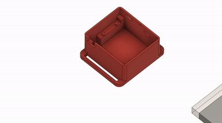
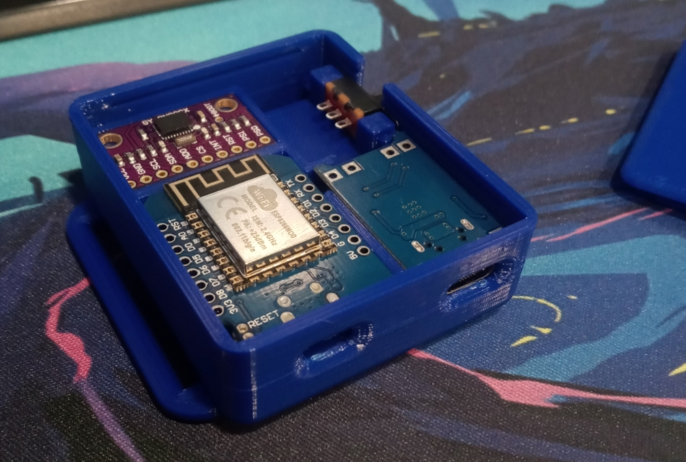
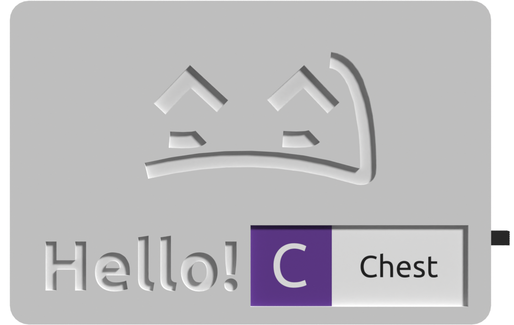

SlimeVR Documentation
Welcome to the SlimeVR documentation. This site covers how to build your own SlimeVR trackers, install or update an existing tracker's firmware, install and configure the SlimeVR Server, or use your mobile phones as SlimeVR trackers.
Note: You need at least 5 trackers (built boards or phones) for proper full body tracking (FBT). Alternatively, you can build a single tracker or use 1 phone/tablet for just waist tracking if you wish to test the tracking without investing in a full kit.
How do I get my hands on those sweet sweet SlimeVR trackers?
1. Build them from scratch (The DIY route)

Example build by NightyIceC00kie
You get yourself a microcontroller, an IMU (supported IMUs), a battery, and a battery charger (These parts will be explained in detail). Optionally, you can add sliding switches, safety diodes, and a few resistors to measure battery percentages. You then solder it all together (soldering is important as good connections to the pins is required for your tracker to function). Alternatively, you can order a base board from a custom PMC manufacturer (please check the pins in the discord’s pcb channel for more information).
Pros: Cheapest and fastest to obtain trackers (apart from using a phone you already have). Full documentation on this site to cover the process, assuming you understand how to solder. Flexibility in construction options allows for budget to advanced builds.
Cons: You will need to solder some wires, have a basic understanding of electronics, and you are limited in how small the trackers can get. DIY builds require time to assemble and may require self-repairs from time to time.
Caution: There is a seller on Amazon selling DIY SlimeVR trackers. Due to a significant number of users reporting issues with these trackers, they cannot be recommended unless you are savvy enough to potentially diagnose any issues as if you were DIY'ing SlimeVR trackers yourself. If you purchase them, you are doing so at your own risk.
2. Pre-order the official DIY Kit on Crowd Supply

A prototype of DIY-Kit boards and wires, which are identical to those in our standard Tracker Sets, but without enclosures and other accessories.
You buy the official DIY Kit which includes all the boards and cables you need, get a LiPo battery, and attach batteries to the boards. All you need is to 3D print (or build) yourself a nice casing and get straps (or get creative and tape them with electrical tape to your body).
Pros: No or little soldering required, tested boards, the smallest possible design, cheaper alternative to buying completed SlimeVR trackers. You can customize cases and straps.
Cons: At this point, you could just buy completed SlimeVR trackers. Import limitations and shipping costs apply. It will cost more than the first option due to shipping, import fees, and construction costs. Due to the chip shortage currently affecting the world, this option is currently planned to ship in November of 2022. Limited supply.
3. Pre-order a built tracker on Crowd Supply
Prototypes of a SlimeVR Tracker
You buy fully built trackers for pre-order at Crowd Supply.
Pros: A premium build of the SlimeVR trackers with a small footprint with no physical build required.
Cons: Due to the chip shortage currently affecting the world, this option is currently planned to ship in November of 2022. Limited supply.
4. Use phones instead of trackers
It is possible to use a phone in place of a tracker, please check the owoTrack mobile application. Note that this option varies depending on your phone make and model, there have been issues with connections, the application being suspended, and a handful of others. Phone straps are also required to be sourced based on phone shape, size, and mount location.
Pros: If you have 5 phones lying around, you can have FBT set up very quickly. You can also use this option to sub in phones for any missing trackers from the previous options.
Cons: Not all phones are supported. Quality of tracking can differ depending on make and model of phone. Your experience may differ wildly depending on your setup.
If you have any problems, feel free to reach out on the SlimeVR discord.
Written by adigyran#1121 and CalliePepper#0666, edited by QuantumRed#0001, CalliePepper#0666, Spazzwan Emojikage#3095, NWB#5135, and Tom Yum#0069, styled by CalliePepper#0666
SlimeVR 101
What is SlimeVR?
SlimeVR is a low cost solution to Full Body Tracking in VR. It uses forward kinematics to build a model of your skeleton calculated from the rotation of each individual tracker, with your headset and controllers being the only absolute position known.

Gif thanks to Butterscotch. Dance thanks to Mighty
Because the headset is a known position and rotation is derived from it, it does not require lighthouses or other forms of additional tracking to model your movement. Your headset and controllers’ built in tracking of the hands manages your shoulders and arms. SlimeVR uses data from Inertial measurement units (IMU) to determine this rotation, and the number of IMU used determines how many tracking points are available.
How many trackers do you need?
Depending on how you plan to use FBT in VR, choose one of the following options:
- Lower-Body Set (5 IMUs) - Your waist, legs, knees and feet are positionally tracked. Any bending of the waist or sitting down will have issues with tracking, and the orientation of your feet will not be tracked.
- Core Set (6 IMUs) - In addition to the previous set this adds a tracker to the chest, this allows for much more accurate tracking while you're laying down, sitting or even just bending over.
- Enhanced Core Set (8 IMUs) - In addition to the previous set, you can now also wiggle your peets. If you plan on lying or sitting down a lot this adds a lot of emotiveness to your poses.
- Full-Body Set (10 IMUs) - In addition to the previous set, you can now move your elbows independently from your controllers in VR. Useful for dancers or additional immersion.
If you look at the gif above, each line there represents a tracked 'bone'. The more points of rotation you add the more defined the final tracking is, as an example the gif above only has the "Core Set" and as such there is no feet rotation.
For more information on what these tracking options look like, please refer to this video:
What is an extension?
An extension is a singular auxiliary IMU attached to a primary tracker and placed at another location. This allows you to build a secondary tracker without the need for an extra battery, charge board or microcontroller. These are sometimes referred to as AUX trackers.

Example extension built by Rames The Generic#3540
The length of the extension is dependent on the cabling used to connect them (shorter than 80cm is a safe range). For more information please check the tracker schematics page.
The suggested extension locations are:
- A chest extension attached to the waist tracker.
- A left foot extension attached to the left ankle tracker.
- A right foot extension attached to the right ankle tracker.
On the Crowd Supply store page and on our discord server, you may find a notation that specifies the number of primary and auxiliary IMUs with a plus sign. For example, the Enhanced Core Set noted above would be called a 5+3 set up, which consists of 5 microcontrollers and 8 IMU. For a better visual on how this looks when on a person, please check the recommended mounting points section of the server set up.
Please note: building extensions is not necessary, as the foot and chest trackers will work as standalone trackers if you would prefer. However, these docs assume that you are building them as extensions.
Created by CalliePepper#0666. Edited by Spazzwan#0001. Video created by ZRock35#9574
SlimeVR Setup
This guide should help you set up SlimeVR trackers and software.
The guide assumes you have either working and flashed DIY trackers or production trackers. SlimeVR currently only works in a windows environment.
Initial Setup
This guide should help you with installing the SlimeVR Server and getting things setup so that everything is functioning as it should.
Install the Latest SlimeVR Installer
The latest SlimeVR Installer can be found here. Download it and install it, this installer can be used to update the server software in the future.

Bear in mind, if you plan on using the server purely for standalone usage via OSC, and not PC VR via SteamVR, you can de-select SteamVR Driver, SlimeVR Feeder App, and USB drivers. If you don't already have SteamVR installed and have launched it previously, you may encounter an error.
Test Your Trackers
Turn each tracker on and see if they work.
Each tracker should blink an LED briefly on startup, and then blink every few seconds to indicate its status as follows:
| Number of blinks | Status |
|---|---|
| 1 | Tracker is ready |
| 2 | Connecting to SlimeVR server |
| 3 | Connecting to wifi |
| 5 | IMU error |
If a tracker doesn't start up, try charging it. Connect the tracker via USB port to your PC or any USB charger. A red LED light should light up to indicate that it's charging. A green LED or blue LED light means it's fully charged (LED might be a different colour depending on your charging board). Try turning the tracker on during charging to see if it works.
Please note that as a rule, DIY trackers should be kept off while charging outside of this specific case.
IMU Calibration
If you have MPU6050 or MPU6500-based trackers, make sure that when you turn on your tracker it's lying on a flat surface. The sensors need to calibrate for 20-30 seconds in a stable environment. This should be done every time you turn on your trackers. Failing to do so will result in an increased rate of drift.
If you have MPU9250, BMI160, or MPU+QMC5883L-based tracker you need to calibrate the IMU before it will work correctly. This calibration only needs to be done once. You can only calibrate one IMU at a time, so if you have any extensions, they will also need to be calibrated.
To calibrate your IMU:
- Plug in your microcontroller (D1 Mini, NodeMCU, or other)
- Open the SlimeVR server, and click Settings, and then click Serial Console under Utilities.
- Flip the IMU you want to calibrate upside down and press the reset button on your micro controller. You should see a message indicating that you need to flip the IMU right side up to begin calibration.
- Upon flipping the IMU over, calibration should begin. To successfully calibrate your IMU you need to gently rotate the IMU in all 3 axes.
- After approximately 60 seconds has passed, the tracker should be successfully calibrated and will begin to show rotation in the SlimeVR server.
Other IMUs, such as the BNO085 or ICM20948 do not require any specific manual calibration and can be used immediately.
Check that the Driver Loads and Connects
-
Start SteamVR, go to Settings > Manage Add-Ons. Check if SlimeVR exists here, set it to On.
-
Start the SlimeVR Server through the start menu via the "SlimeVR Server" shortcut.
-
Restart SteamVR. Now you should see 3 trackers active in SteamVR:
-
In SlimeVR Server, you should see the rotation change for your headset and controllers as you move them around:

Created by Eiren, edited by adigyran#1121, CalliePepper#0666, Emojikage#3095 and NWB#5135, styled by CalliePepper#0666.
Connecting your Trackers
This guide should help you set up SlimeVR trackers and software.
Connecting trackers
Note: If you are using DIY trackers with hardcoded the WiFi credentials or phones with owoTrack, you can skip to assigning your trackers. However, if you hardcoded the WiFi credentials and are having trouble connecting these steps may still be helpful for diagnosing the issue.
-
Open the SlimeVR Server and click Setup Wizard.
-
Input your WiFi credentials, so that your tracker can connect to WiFi, then click Submit.
-
Plug in a tracker one at a time. You should then see your tracker appear after a little while. Click I connected all my trackers once you're done.
-
Hover over and click on the unassigned tracking points that you want to use. Shaking your tracker will highlight it. Click I Assigned all the trackers once you're done.
-
Congratulations! You connected all of your trackers, but there's still more left to do. Click I'm ready once you have your trackers on.

-
This next part is for making sure that your trackers will move in the right direction. Simply follow the instructions shown and then click Next step once your mounting rotations have been calibrated. More information on mounting can be found on the Putting on your trackers page.

-
At this time, the reset tutorial isn't ready, but you can check the page on reset bindings for more information in the meantime. Simply click Continue.

-
You'll want to be in VR for this final step. This involves wiggling around with your feet planted so that your body proportions can be determined. Simply follow the instructions shown. Be sure to verify your results and that nothing is obviously incorrect like having a neck length of 100 cm! Click Continue once you're done.
-
You're done! If you've made it through all that, you should be ready to start using SlimeVR!
Troubleshooting
If all trackers don't show up, this can be caused by Windows Firewall blocking the connection. To fix this, go to SlimeVR Server folder and run firewall.bat as administrator. There are additional steps that can be taken on the common issues page if this does not work.
For additional information on trackers, you may want to enable Developer mode. The setting for this can be found under Settings, General, and then Interface.
If some trackers don't show up, try turning them off and on again. You can rotate tracker around and see it change rotation in the server to figure out which tracker is which.
If some trackers don't change their rotation as you move them (including extensions), or display 0 0 0 rotation, try turning them off and on again, usually it should fix the issue.
If any tracker displays ERROR as it's status, or have orange and blue light permanently on, that's not good. Try restarting them and see if it helps. If not, contact Eiren.
Created by Eiren, edited by adigyran#1121, CalliePepper#0666, Emojikage#3095 and NWB#5135, styled by CalliePepper#0666.
Configuring Your Trackers
Configuring How Many Virtual Trackers You Need
Before launching SteamVR, check the checkboxes relative to how many SteamVR virtual trackers you wish to spawn.
Please note that this only affects the virtual trackers in Steam and not your SlimeVR trackers. If you only have Waist and Legs ticked, they will still be accessing up to an 8 IMU setup (waist, chest, upper legs, lower legs and feet). At the moment, VRChat supports 11 virtual trackers, including headset and controllers.
SteamVR Trackers to Enable Depending on Your Set
- 5+0: waist and feet.
- 5+1: chest, waist and feet.
- 5+3: chest, waist, knees, feet.
- 7+3: chest, waist, knees, feet, elbows
Trackers marked in italic should only be enabled if your game or application supports it (VRChat does).
One peculiarity to note is that SlimeVR lower leg and feet trackers will combine into a single SteamVR tracker. Similarly, hip and waist trackers will also combine into a single SteamVR tracker.
Do not enable trackers you do not need as this could lead to in-game calibration issues.
Launch SteamVR when you're ready.
Access the SlimeVR Server in VR
There are several ways you can view and interact with the SlimeVR GUI while in VR. These include using the Steam dashboard (free), Desktop+ (free) OVR Toolkit (paid) or XSOverlay (paid).
Reset Trackers
When getting in VR, your trackers will be floating all over the place and won't be following your body. To fix this, you need to perform a tracker reset.
To Perform a tracker reset:
- Stand straight, legs vertical (not together), trackers facing their designated direction.
- Press the RESET button in the SlimeVR Server.
- Look forward and maintain your pose until the countdown finishes.
- After the timer ends you should see that the trackers point in the right direction and are under you.
Look down. After resetting, the trackers should be directly under you and follow your movement; however as you haven't configured the body proportions yet, they may not be positioned accurately compared to your real body.
See setting a reset keybind for a quick and easy way to reset your trackers while in VR.
Created by Eiren, edited by adigyran#1121, CalliePepper#0666, Smeltie#1999, Erimel#7159, Emojikage#3095 and NWB#5135, styled by CalliePepper#0666.
Putting on Your Trackers
Put trackers on according to the pictures. These are the recommended positions, you can use any comfortable position for you, but there are a few rules:
- You should set Tracker role to the proper role according to body part you put your tracker on. This includes tracker extensions. Use pictures to reference role names and their recommended mounting points.
- You should set Tracker direction according to your mounting direction. You can only mount trackers facing forward, left, backwards, or right. You can not mount trackers facing other directions (yet). When you mount it, make sure they sit tight, and face as much in this direction as possible when you're standing straight. I.e. "Forward" should face the same way your HMD is facing when you look forward while standing!
- You can mount trackers tiled forward/backward or on the side, this will not mess up the tracking.
- You can mount trackers in any place on the designated body part you find comfortable, however the less the area is deformed by muscular movement the better the tracking will be. Make sure the tracker moves when you bend the joint to register movement. Pay special attention to the waist tracker, there are many places where you can mount it and it won't register you bending over. Mount it above your hip, around the level of your belly button.
Recommended Tracker Placement
- 5 trackers: chest, upper legs and lower legs.
- 6 trackers: chest, hip, upper legs and lower legs.
- 7 trackers: chest, waist, hip, upper legs and lower legs.
- 8 trackers: chest, hip, upper legs, lower legs and feet.
- 9 trackers: chest, waist, hip, upper legs, lower legs and feet.
- 10 trackers: chest, hip, upper legs, lower legs, feet and upper arms.
- 11 trackers: chest, waist, hip, upper legs, lower legs, feet and upper arms.
Recommended Mounting Points
*You can also put the main tracker on the chest, and tracker extension on the waist. It may be more comfortable and stable this way, since your hand won't bump into waist tracker.
Alternative mounting points
Recommended tracker positions are:
- Chest: facing forward middle of the chest.
- Waist: facing foward or to the side on your waist (above you hip, around the level of your belly button) depending on your build.
- Hip: facing forward or back on your hip (where you put your belt).
- Upper leg: just above the knee or higher up the thigh depending on your build.
- Lower leg: on the ankle facing any direction you like.
- Foot: on top of the foot. Trackers 'up' facing toward the ankle, and 'front' facing the ceiling.
- Upper arm: on upper arm (above elbow), on the side or back (forward being your bicep).
- Lower arm: on lower arm (below elbow), inwards, close to the elbow.
It is also recommended to mount your trackers directly on bare skin for better adhesion (more stability and less sliding).
Form and direction of axes are subject to change in future revisions!
Created by Eiren, edited by adigyran#1121, CalliePepper#0666, Spazzwan#0001, Erimel#7159, Emojikage#3095 and NWB#5135, styled by CalliePepper#0666. Videos created by ZRock35#9574
Body Proportions Configuration
SlimeVR uses a virtual skeleton to compute positions from the data it receives from your trackers. As part of the setup procedure, this skeleton is made using your real world measurements (in cm) for various body parts in order for SlimeVR to compute its skeleton accurately to your real body. While these values can be input directly into the SlimeVR server, it is recommended you use the AutoBone system. Once you have completed the auto-configuration process, it is also recommended to use the measurements above to confirm the accuracy before finalising the automatic values. There is also an option to visually check within VR, described at the bottom of this page.
Measurements

|
Torso lengthThe torso length is from your shoulders to your pelvis.Chest distanceThe chest distance is from your shoulders to around the midpoint of your torso (around the bottom of your sternum).Waist distanceThe waist distance is from your waist to your hip (pelvis).Hips widthThe hips width value is the distance between your femurs.Legs lengthThe legs length value is the full length of your legs, from your pelvis to your ankle.Knee heightThe knee height value is from the knee to your ankle.Foot lengthThe foot length value is the length of your foot, from your ankle to your toes.Head shiftThe head shift value is from your headset to about the middle of your head.Neck lengthThe neck length value is the distance from about the middle of your head to your shoulders.Hip offset / Foot shiftThese values offset your real trackers from virtual one, if your avatar has non-human or unusual proportions. A good example of this use is in avatars with digitigrade legs that may have the foot further out or back.Skeleton offsetThe Skeleton offset value offsets all your trackers from their physical position forward or backwards. This can be left untouched unless you need it. |
AutoBone (also known as "automatic body proportions calibration") removes the need to manually input bone lengths using automatic bone length calculations recorded through user movements. AutoBone is available as "Automatic calibration" under the "Body Proportions" tab of the GUI.
This bypasses the need to manually set the bone lengths, although it is still possible to fine-tune values manually if needed.
How to Use
Make sure the headset is ON and worn on your head during this process.
Before using AutoBone, you must prepare your body proportion values by standing straight up and pressing the "Reset all proportions" button under the "Body Proportions" tab. If this is not done, then the height value used in calculations will be incorrect.
VERY IMPORTANT: During the recording, you must keep your heels in the same position, otherwise the resulting values will be invalid.
To use AutoBone, follow these steps:
- Navigate to the "Body Proportions" tab and ensure you're on "Automatic calibration" and not "Manual calibration"
- Stand up straight and press the "Reset all proportions" button.
- Follow the steps shown on the GUI.
- If you're using SlimeVR version 0.6.0 or older, these instructions will be more up-to-date and you can safely ignore the instructions on the GUI. To continue using these instructions on SlimeVR version 0.6.0 or older, you can skip to step 3 "Get ready to move" on the GUI.
- Make sure to keep your heels on the ground and in the same position for the duration of recording.
- Press the "Start Recording" button, the GUI will indicate that recording has started. The recording will last for approximately 20 seconds.
- Move until the text on the button changes back to "Start Recording", the current best known movements for calibration are as follows, returning to standing up straight after each step:
- Standing up straight, roll your head in a circle.
- Bend your back forwards and squat. While squatting, look to your left, then to your right.
- Twist your upper body to the left (counter-clockwise), then reach down towards the ground.
- Twist your upper body to the right (clockwise), then reach down towards the ground.
- Roll your hips in a circular motion as if you're using a hula hoop.
- If there is time left on the recording, you can repeat these steps until it's finished.
- When the recording is done, SlimeVR will process the recording. After processing is done, you will be able to see new values for your body proportions reported in cm.
- To use the calculated values, press the "They're correct" button. If the values do not look right, you can try recording again using the "Redo recording" button - the recording will start immediately, so make sure you're ready.
Visual reference for movement calibration steps

If you are having issues with AutoBone:
- Make sure you kept your heels in the same position while recording, don't lift your legs or walk around.
- Make sure your headset isn't lagging, freezing, or teleporting (use the desktop view in SteamVR to start recording).
- Double check that your trackers are mounted correctly and functioning properly.
- Verify that you pressed the "Reset all proportions" button under the "Body Proportions" tab while standing up straight to calibrate your height properly.
- Make sure the height in the "Manual calibration" section under the "Body Proportions" tab is accurate to your own height.
If none of these help, you can ask for help in the #autobone channel in the SlimeVR Discord.
To help with debugging in the SlimeVR Discord, you can send a recording while asking for help. A recording includes a recording of all your tracker information to help recreate your setup, and will include any movements you do, but no personally identifying information. If you are comfortable with sharing your tracker data, you can find your recordings in the server install directory under the "AutoBone Recordings" folder. The most recent recording is auto-saved as "LastABRecording.pfr" and any manually saved recordings will be "ABRecording1.pfr", "ABRecording2.pfr", etc., with the highest number being the most recent.
How it Works
AutoBone works by recording movement data and simulating that movement rapidly while gradually adjusting the bone lengths. When adjusting bone lengths, the algorithm measures the amount the feet slide to know whether it's achieving a better or worse outcome with each adjustment. By iterating over the data multiple times, the algorithm is able to obtain reasonable bone length values with minimal foot sliding.
The AutoBone algorithm uses classic machine learning technique called hyperparameter optimization to acquire the bone length values. First, many samples of movement data are recorded, then using hyperparameter optimization, the algorithm gradually adjusts the bone lengths to minimize the error of foot sliding. Error is calculated through multiple different methods, but generally it is formulated to retain the headset's reported height, "average" human body proportionality, and reduce the amount that the feet slide during movement.
Almost all of the algorithm's internal values are exposed through the config file. Read the following Configuration documentation section to learn more.
Configuration Documentation
All configuration options should be placed in the vrconfig.yml file and are sub-configs to autoBone, for example:
autoBone:
numEpochs: 100
initialAdjustRate: 10.0
adjustRateMultiplier: 0.995
| Config Option | Value Type | Default Value | Description |
|---|---|---|---|
sampleCount | Integer | 1000 | The number of pose samples to record |
sampleRateMs | Long Integer | 20 | The millisecond interval between each sample to record |
saveRecordings | Boolean | false | When true, recordings will automatically be saved |
minDataDistance | Integer | 1 | The minimum distance between samples to be used while adjusting |
maxDataDistance | Integer | 1 | The maximum distance between samples to be used while adjusting |
numEpochs | Integer | 100 | The number of epochs (full loops) to iterate over the data |
printEveryNumEpochs | Integer | 25 | The number of epochs before the progress is logged |
randomizeFrameOrder | Boolean | true | When true, the frame order will be shuffled for each epoch |
scaleEachStep | Boolean | true | When true, the proportions will be scaled to the target height at the end of each epoch |
initialAdjustRate | Float | 10.0 | The factor to adjust the values by each iteration |
adjustRateMultiplier | Float | 0.995 | The factor to decay the adjust rate by each epoch (multiplied by this value) |
slideErrorFactor | Float | 0.0 | The factor of which the foot slide error is used in the error calculation |
offsetSlideErrorFactor | Float | 1.0 | The factor of which the foot offset error is used in the error calculation (captures sliding) |
footHeightOffsetErrorFactor | Float | 0.0 | The factor of which the foot height (y axis) offset error is used in the error calculation |
bodyProportionErrorFactor | Float | 0.2 | The factor of which the body proportion error is used in the error calculation (based on human averages) |
heightErrorFactor | Float | 0.0 | The factor of which the body height error is used in the error calculation |
positionErrorFactor | Float | 0.0 | The factor of which the absolute position error is used in the error calculation |
positionOffsetErrorFactor | Float | 0.0 | The factor of which the absolute position offset error is used in the error calculation |
calcInitError | Boolean | false | When true, the initial error over the data is reported as epoch 0 |
targetHeight | Float | -1.0 | The height to use for the height error calculation, this is calculated automatically when negative but can be overridden with this when set to a positive value in meters |
Configuring Body Proportions Manually
All this configuration can be done from the SteamVR dashboard or within VRChat (in front of a mirror). All measurements are in centimeters. Press + or - to change lengths by 1 cm. Pressing Reset will change the value to a default based on the HMDs current height.
Make sure you have proper mounting before doing this as it will influence your results: mounting page:
You can use a mirror in VRChat to see your trackers' positions. However, compare SteamVR tracker position to IRL joint's position, not your VRChat avatar's joints positions.
Alternatively, you can use the SlimeVR Overlay in SteamVR to visualize your bones.
Make sure to adjust the values from the top-down.
Head shift (8-12)
Shake your head left to right as if you’re disagreeing. Adjust your head offset until any movement is negligible. All trackers should stay in place.
Neck length (8-14)
Move your head up and down as if you’re nodding OR tilt your head to the left and right like a cute, confused, dog. Adjust your neck length until any movement is negligible. All trackers should stay in place.
Torso length (50-70)
Modify the value until your SteamVR waist tracker lines up with your belt line (you can use your controller to line them up).
Chest (25-40) and Waist (2-6) (when using additional spine trackers)
Sit down hunched and modify values until the waist tracker is closest to hip.
Legs (80-100)
Modify until trackers line up vertically with your real feet.
Knees (45-60)
Bend your knees slightly while keeping your back straight and modify the value until your feet move the least amount possible OR sit down and modify until your feet touch the floor (not floating above ground).
Feet (when using feet extensions)
Set “foot length” at 0, change “foot offset” until feet trackers are inside your avatar’s ankles or at the same level horizontally and set “foot length” back to 5.
Hips width (26-32)
Default value is good. Can try to tweak to make your leg trackers line up when resetting, but do not increase in the goal of preventing leg crossing.
Hip offset (0)
Keep at 0 unless you have a particular problem with your avatar.
Skeleton offset (0)
Keep at 0 unless you have a particular problem with your avatar.
Shoulders distance (4-10) and Shoulders width (30-42)
Set Upper arm length to 0 and adjust the values until the elbow trackers are on your shoulders.
Upper/Lower arm distance (20-35)
Adjust so that the SteamVR tracker is on your elbow.
Controller distance z (10-20) and Controller distance y (2-8)
Rotate wrist and adjust until elbow tracker has the least amount of sliding.
Elbow offset (0)
Keep at 0 unless you have arm tracking problems using lower + upper arm tracking from controller.
Created by Butterscotch!#0226, Eiren and CalliePepper#0666, edited and styled by CalliePepper#0666, Erimel#7159, Emojikage#3095, Butterscotch!#0226, and Spazzwan#0001. Video by adigyran#1121 with help of MightyGood#1341.
Setting up Reset Bindings
Reset bindings are one of the most essential features to set up for an enhanced experience. Allowing you to reset in a matter of seconds or less. In this guide we'll show you how to set them up.
Table of Contents
What is a Reset?
A reset is the action of resetting the slimeVR skeleton model to a default pose. This is needed to mitigate any drift you may experience overtime. You have the option of reset or fast reset, whichever you use depends on your situation. Reset will do a full reset where by you have to stand straight, look forward and reset (with standard 6 point tracking it is not required to t-pose). A fast reset is used to clear drift, and only resets the axis along which drift occurs. Now that you know what a reset is, let's set up a fast way to trigger these resets!
Which Reset Type to Use?
The type of reset is completely dependent on your position or circumstances.
Reset:
A standard reset is used to completely restore your skeleton model to it's default pose. This is done by standing up straight, looking forward and performing the reset. This can only works as intended when standing up.
Fast Reset
A fast reset only resets/corrects for any potential drift on one axis. Whilst less accurate this allows you to reset whilst sitting/laying down. It is recommended to straighten your limbs and look forward whilst doing this for optimal results. This method makes it possible to not have to get up every time you have to reset.
Feeder App
To set up reset bindings for SlimeVR you can use the feeder-app, which is included by default in the SlimeVR-Installer version 0.1.5 and up. If you are running an outdated version of SlimeVR without the feeder app, you can download the latest version and install it. This makes setting up reset bindings a lot easier. You can use the included video for a visual guide on how to set up the reset bindings.
Setup
To set up reset bindings using the feeder-app you do the following:
- Head over to your SteamVR settings (make sure "Advanced Settings" is enabled).
- Go to Controllers > "Show old binding UI" > "show more applications".
- Scroll down and select "SlimeVR-Feeder-App".
- Pick a button on your controller to use for the reset binding.
- Now you can set up a key combination or behavior to perform: "Reset" or "Fast Reset". (see video for clarification)
And you're done! You're now all set up to have blazingly fast resets. Fastest reset in the west.
You can set this up in whatever way works for you! Most people opt for either a double tap, long press or button combinations/chords. This choice is totally up to you.
Keyboard Shortcuts
The SlimeVR Server has the following default key bindings:
CTRL+ALT+SHIFT+Ufor Quick reset.CTRL+ALT+SHIFT+Yfor Reset.
These keybindings can be configured by editing the following line of the vrconfig.yml file:
keybindings: {reset: CTRL+ALT+SHIFT+Y, quickReset: CTRL+ALT+SHIFT+U}
If you want to be able to bind these to your controller, you will need an additional application such as OVR Advanced Settings (Free) or OVR Toolkit (Paid, $12 USD).
OVR Advanced Settings Bindings
Make sure OVR Advanced Settings is closed before following these steps or you will encounter problems.
-
In the Windows Explorer window, enter
%appdata%/AdvancedSettings-Team/OVR Advanced Settings.iniin Address bar and press Enter. Notepad with theOVR Advanced Settings.inifile contents should open. -
Find the
keyboardOneandkeyboardTwolines and replace them with the following lines:keyboardOne=^*>y ; CTRL+ALT+SHIFT+Y - Reset keyboardTwo=^*>u ; CTRL+ALT+SHIFT+U - Quick resetNote: If you changed default SlimeVR Server key bindings, refer to Keyboard Input Guide.
-
In SteamVR Dashboard, open OVR Advanced Settings and select Bindings. If you don't see the icon for OVR Advanced Settings on your dashboard, try running OVR Advanced Settings from your Steam library and check if the icon appeared on your dashboard.
-
In the opened window, select the Misc tab.
-
Double-click the plus sign near the desired button name to add a binding.
-
In the opened dialog window, select BUTTON.
-
Click None near the desired button action. To see more button actions, click Show more.
-
In the opened Boolean Actions window, select Keyboard Shortcut One.
-
Repeat previous two steps for Keyboard Shortcut Two.
OVR Toolkit
If you do not wish to bind keyboard shortcuts directly to your controller buttons, OVR Toolkit's "wristwatch" has Macro functionality that can be used to trigger Resets and Quick Resets.
Demo GIF:

- Open the OVR Toolkit settings. It may be in the system tray.
- Click on "Settings" on the top, then "Setup Wrist Macros" on the right.
- Click on "Macro Icons" at the bottom, this will open a folder that you can place PNGs for custom macro icons. Download and copy these two icon files for the resets into there. Reset Icon. Quick Reset Icon.
- Close and re-open OVR Toolkit, otherwise the icons won't show up yet.
- Click "Add Macro", and click "Add key press" until you have enough for each key of the binding. (Default needs 4).
- For each key in sequence, click "Rebind" and then push one of the binding's buttons once. Having the letter as the bottom key is important, as that is the order the keys are pressed. Entering
Y+CTRL+ALT+SHIFTwould not work, butCTRL+ALT+SHIFT+Ywould. - Click the blank icon square on the left side of the entry, and choose the corresponding icon. (To differentiate, Reset is the basic reset symbol. Quick Reset has the flame in the middle.)
- Repeat steps 5-7 for the other binding.
- Click "Save Changes", and then check the Macros tab on your OVR Toolkit wristwatch for your new bindings! (You may need to restart OVR Toolkit!)
{kind=link}
{kind=link}
{kind=link}
Example GIF of adding the Quick Reset binding:
Warning
Currently the SlimeVR server resets the positions the instant the binding is pressed, which is not ideal if you are looking down at your extended arms. However, this can be overcome with a simple AutoHotKey script until a configuration option is added to add a countdown to those bindings. Save this script with a .ahk extension.
If you want this script to also start up with Windows, right click it, Create Shortcut, and copy that shortcut to C:/Users/<YourUsername>/AppData/Roaming/Microsoft/Windows/Start Menu/Programs/Startup
#NoEnv ; Recommended for performance and compatibility with future AutoHotkey releases.
; #Warn ; Enable warnings to assist with detecting common errors.
SendMode Input ; Recommended for new scripts due to its superior speed and reliability.
SetWorkingDir %A_ScriptDir% ; Ensures a consistent starting directory.
; Reset
$^+!y::
SoundBeep
Sleep 3000
SoundBeep
SoundBeep
SoundBeep
Send, ^!+y
return
; Quick Reset
$^+!u::
SoundBeep
Sleep 3000
SoundBeep
SoundBeep
Send, ^!+u
return
; The beeps are just for extra feedback and can be safely removed.
Notes
- If you reset your playspace (for example long pressing Oculus button on Quest), you will need to do a tracker reset.
- OpenVR Advanced Settings' keybinds may not work well in certain languages. If this is the case for you, start SteamVR with your system's language set to English.
- SlimeVR Server uses Java 11.
- If you need the SlimeVR Steam driver you can find it here.
Created by Eiren, edited by adigyran#1121, CalliePepper#0666, Smeltie#1999, Emojikage#3095 and Tony#9719, styled by CalliePepper#0666. Videos created by ZRock35#9574. OVRT GIFs created by Tony#9719.
OSC
OSC stands for Open Sound Control. It was originally developed to be used to connect and control music equipment in a simple, open, and standard way. VRChat developed a system for it to be used to control the avatar and virtual trackers, allowing for fully body tracking on Quest 2. You can read the VRChat documentation on it here.
OSC Setup
Once you have set up your trackers and mounted them correctly, you can set up OSC. In the SlimeVR Server, navigate to Settings > OSC > VRChat and enable OSC. If the server is running on the Quest, leave the address as 127.0.0.1. If the server is not on the Quest, put in your Quest's IP. You can get this by opening the Quick Settings menu on your Quest, selecting Wifi, your currently connected network, and scroll down and click the arrow. The IP address is listed there (video tutorial on how to find your Quest's IP).
Now that you have the SlimeVR side set up, you can now connect VRChat to SlimeVR.
If SlimeVR is running on your Quest, press reset now!
Open VRChat on your Quest.
Using the Radial Menu, select Options at the top, OSC, and then enable it. You can verify that the trackers are being seen by VRChat by selecting "OSC Debug" if you like.

Walk over to a mirror, open the quick menu, and press "Calibrate FBT". Make a T-Pose, lining yourself up with the T-Pose in the mirror. Press reset on the server (unless you're running it on your Quest). Pull both triggers, and you're done!
Note: If SlimeVR is running on your Quest and the trackers are initially misaligned, you can navigate to the IK settings in VRChat's quick menu and press "Auto-Center OSC Trackers" once or twice.
Created by Bagel#6705. SlimeVR OSC implementation by Erimel#7159.
SlimeVR Experience Survey
Congratulations! At this point you should have your SlimeVR trackers up running!
After using them a bit to get a feel for how well they work, it would be appreciated if you could complete the SlimeVR Experience Survey.
To view previous responses, you can visit the SlimeVR Experience Survey results page.
Created by NWB#5135, with thanks to Smeltie#1999 for initial survey layout and results. Many thanks to everyone who has completed a survey!
Common Issues
So something isn't working and you find yourself stuck, this page is here to give answers to common issues. If nothing here answers your question, please feel free to ask in the #support-forum on the SlimeVR Discord. Make sure you mention all of the steps you have tried from here when asking for help.
- Please specify upload_port while updating firmware / trying to upload firmware fails
- The SlimeVR Server won't start
- The Wi-Fi Settings window outputs ERROR {#the-wifi-settings-window-outputs-error}
- The Wi-Fi Settings window outputs symbols and nothing else {#the-wifi-settings-window-outputs-symbols-and-nothing-else}
- My tracker keeps flashing
- My tracker never connects to Wi-Fi / are not appearing on the SlimeVR Server
- My aux tracker isn't working
- Sensor was reset error
- The trackers are connected to my Wi-Fi but don't turn up on SlimeVR {#the-trackers-are-connected-to-my-wifi-but-dont-turn-up-on-slimevr}
- The trackers are connected to the SlimeVR server but aren't showing up
- The trackers are connected to the SlimeVR server but aren't turning up on Steam
- My trackers are bound to the wrong body part in SteamVR
- Your trackers are drifting more than expected
- My feet sink into the floor / I'm sliding a lot
- Trackers are moving in the wrong direction when I move
- My avatar floats above the ground
- My legs don't bend
- My legs cross when sitting down
- One of my leg is higher than the other
- AutoBone / Automatic body proportions calibration isn't working
- SlimeVR is stuck at "Connecting to the server"
- WebView2 is missing / SlimeVR GUI crashes immediately / "panicked at ... WebView2Error"
- References
Please specify upload_port while updating firmware / trying to upload firmware fails
This error indicates there is interference between your computer and the tracker. Check the following:
- Make sure your USB cable from the tracker is plugged firmly into your PC.
- Make sure that your USB cable is a data and charging cable (it is suggested you try other cables or devices with the cable).
- Make sure that your drivers are up to date.
Additionally, this can be caused by software hogging COM ports (VSCode and Cura can be the cause of this).
The SlimeVR Server won't start
- If there's a port error, make sure you don't have other instances of the server running and/or restart your PC.
- This may also be caused by Java not being installed or issues with your Java installation. The installer linked in the Installing the server page should handle this.
The Wi-Fi Settings window outputs ERROR {#the-wifi-settings-window-outputs-error}
Try resetting your tracker, this may fix the issues immediately. If this doesn't work, your COM port may be being hogged, which can be tested by going through the firmware update process in VSCode (as it has more verbose error messages). If this is the case, close any application that might be hogging the ports (VSCode and Cura are often the cause). If the issue persists, try connecting the tracker to a different USB port.
The Wi-Fi Settings window outputs symbols and nothing else {#the-wifi-settings-window-outputs-symbols-and-nothing-else}
There are two common causes that you should check:
- Make sure that you have the right driver installed.
- Check that your PIO firmware upload worked. If you have multiple firmware versions open in VSCode you will have to set the correct one to default to upload.
My tracker keeps flashing
This is intended behavior, the number of flashes lets you know the current status of your tracker. Check the top of the the setup page for more info.
My tracker never connects to Wi-Fi / are not appearing on the SlimeVR Server
The two common issues that cause this error are:
- Make sure you are connecting to a 2.4GHz network, 5GHz networks are not supported.
- Check your SSID for special characters. At the time of writing SlimeVR only supports network SSIDs that contain alphanumerical characters.
If all of this is correct, you can check your gateway's list of connected devices to see if all your trackers are connecting. If a tracker is not connecting even after using the same firmware upload with hardcoded Wi-Fi details there are two additional steps you can check:
- Check if your Wi-Fi has reached it's maximum allowed Wi-Fi connections. You can test this by disconnecting devices and then trying to connect your trackers again.
- If you hard coded your Wi-Fi settings in
platformio.initry connecting your trackers via usb and pushing new Wi-Fi details. You may find this either fixes your connection or provides you with additional details on why the connection is failing.
My aux tracker isn't working
In order to make sure your aux tracker is set up, you need to specify it in your defines.h uploaded to the primary tracker's firmware. Check the bottom of the section mentioning defining the pins on the configuring the SlimeVR firmware page. Alternatively, you should ensure that you have correctly soldered VCC to AD0 on your aux tracker IMU.
Sensor was reset error
Check your INT wire, there is either a bad connection or you have it connected to the flash pin. If you are building your tracker on a breadboard, your connections may be not firm enough and cause this error.
The trackers are connected to my Wi-Fi but don't turn up on SlimeVR {#the-trackers-are-connected-to-my-wifi-but-dont-turn-up-on-slimevr}
Check that you do not have two copies of the SlimeVR server running, as only one of them will show trackers connected.
If only one server is running, this is most likely a firewall issue, go to SlimeVR Server folder and run firewall.bat as administrator to add the firewall rules to Windows Defender Firewall.
If you are still having trouble, try manually adding the SlimeVR Server to your firewall.
- Go to Settings > Network & Internet then click on the text link Window Firewall (you may have to scroll down).
- In the firewall window, click the link Allow an app through firewall.
- Click the Allow another app... button, and then Browse... in the opened Add an app window. If your options are greyed out in the Allowed apps window, click the Change Settings button to allow changes.
- In the File name text box, type
*.*and press enter before navigating toslimevr.jarin your SlimeVR server folder and select it (if you cannot see files in this folder, try typing*.*and pressing enter again to show all files). - Click the Add button to add the file to your firewall settings.
- Finally, make sure both public and private check boxes are selected in the Allowed apps window before clicking OK to save the changes.
If adding SlimeVR to your firewall has not worked, you can try to diagnose the issue further with the following steps:
- Try completely disabling Windows Defender Firewall on your computer temporarily to test if the trackers will connect.
- If the trackers only show up on SlimeVR when Windows Defender Firewall is disabled, then you have a problem with your firewall.
- Try pinging the tracker from your computer to see if it can be reached by opening Command Prompt (CMD) and run the command
ping <IP>, where<IP>is your tracker's IP (ex.ping 192.168.0.1). You can find the tracker's IP using the "Serial console" under the "Settings" tab of the SlimeVR GUI.- If the command outputs something like
Reply from 192.168.XXX.XXX: Destination host unreachable., then you likely have a problem with either your router or your firewall. - If the command outputs something like
Reply from 192.168.XXX.XXX: bytes=32 time<1ms TTL=63, then you likely have a problem with either your network adapter or your network settings. You may need to enable broadcast packets (or something similar) on your router, as SlimeVR trackers broadcast to255.255.255.255to discover your SlimeVR Server.
- If the command outputs something like
- Try hosting a Wi-Fi hotspot either from your computer or your phone and connect your trackers to it to see if they will show up on SlimeVR using it.
- If the trackers don't show up on SlimeVR, then you likely have a problem with either your trackers or your computer. It may be worth trying disabling your Windows Defender Firewall as per the first step, but using this Wi-Fi hotspot instead.
- If the trackers show up on SlimeVR, then you likely have a problem with either your router or the network adapter you connect to your router with.
If none of these steps have helped you, you can find information about getting further help at the top of this page.
The trackers are connected to the SlimeVR server but aren't showing up
This is usually the result of an issue with the IMU. Plug in your Wemos D1 Mini and check through the serial console under settings in the SlimeVR server. You may see an error like one of the following:
[ERR] I2C: Can't find I2C device on provided addresses, scanning for all I2C devices and returning
[ERR] I2C: No I2C devices found
[ERR] I2C: Can't find I2C device on provided addresses, scanning for all I2C devices and returning
[DBG] I2C (@ D2(4) : D1(5)): I2C device found at address 0x68 !
[ERROR] [ErroneousSensor:0] IMU of type MPU6500 failed to initialize
The most common reasons for errors with the IMU are the following:
- You accidentally set the IMU wrong (i.e. set as MPU6050 when you have an BNO085)
- You accidentally selected the wrong board type (i.e. set as BOARD_SLIMEVR instead of BOARD_WEMOSD1MINI)
- The wiring is wrong (e.g. accidentally swapping around D1/D2 and SDA/SCL)
- There's an issue with the soldering (e.g. not enough solder, cold joint, or bridging between SDA and SCL)
- You're using a breadboard (Without soldering connections, the IMU often won't be able to communicate with the microcontroller)
- There's an issue with the IMU itself (e.g. burned trace while soldering, or the chip is downright DOA)
The trackers are connected to the SlimeVR server but aren't turning up on Steam
- Make sure you installed SlimeVR with the installer to have the right SteamVR driver.
- Make sure the SlimeVR addon is enabled in SteamVR Settings > Startup/Shutdown > Manage Add-ons.
- Make sure you have SteamVR Trackers clicked.
My trackers are bound to the wrong body part in SteamVR
- If this is in-game, this is probably due to a calibration issue.
- If this is in SteamVR, go to Settings > Controllers > Manage Vive Trackers, and manually set up the trackers' positions to match the virtual trackers' names.
Your trackers are drifting more than expected
Make sure that when you turn on your tracker, it's lying on a flat surface. The sensors need to calibrate for 10-20 seconds in a stable environment.
My feet sink into the floor / I'm sliding a lot
This will be due to either your physical or bone length set up. Try:
- Running AutoBone again.
- Other suggested mounting points.
- Adjusting your bone lengths manually by following the step shown here.
Trackers are moving in the wrong direction when I move
- Make sure your mounting orientations for your trackers in the server are correct. (you might have to lie about them for certain setups)
- You may have specified a wrong
IMU_ROTATIONvalue in yourdefines.hfile. Take note of which trackers are the issue and refer to the configuring the SlimeVR firmware page to get the board's rotation right. - If it’s only off by a few degrees, shift your trackers inwards or outwards a bit, then full reset.
My avatar floats above the ground
- Make sure your floor level is correct using OVRAdvancedSettings' fix floor function.
- Increase your user real height in VRChat or any equivalent setting in other games.
My legs don't bend
- Make sure you have upper leg trackers above your knees and assigned as "upper leg" trackers as well as lower leg trackers below your knees assigned as "lower leg" trackers.
- Make sure your lower legs trackers are on your lower legs and not your feet.
My legs cross when sitting down
- Try mounting your upper leg trackers more inwards.
- Try mounting your upper leg trackers higher on your thighs or lower on your upper legs depending on your build.
- Calibrate with your legs straight and a normal hip width (24-32) in your body proportions.
- Use fast reset to correct leg crossing: assigning a keybind for resetting.
One of my leg is higher than the other
Shift your upper leg trackers a bit, try out other mountings for your upper leg trackers
AutoBone / Automatic body proportions calibration isn't working
If AutoBone isn't working properly for you, you can find a list of common issues and debugging information in the "Common Issues / Debugging" section of the body proportions configuration page.
SlimeVR is stuck at "Connecting to the server"
If your SlimeVR GUI is never loading past "Connecting to the server", it is likely that your SlimeVR configuration file is invalid. You can try deleting or moving the vrconfig.yml file in your SlimeVR install folder (generally located at C:\Program Files (x86)\SlimeVR Server on Windows) and running SlimeVR again to generate a new configuration file.
Please note that you will lose your configuration if you decide to delete the vrconfig.yml file. If you wish to retain the invalid configuration file, you may either rename or move the file to a different location, then run SlimeVR again to generate a new configuration file.
WebView2 is missing / SlimeVR GUI crashes immediately / "panicked at ... WebView2Error"
It's possible that you don't have the required WebView2 component installed, you can download the WebView2 installer from https://developer.microsoft.com/en-us/microsoft-edge/webview2/consumer/. To ensure that WebView2 installs properly, run the WebView2 installer as an administrator (right click, then click "Run as administrator") and make sure the installer is running from the C: drive on your computer. If it's still not working, try putting the installer in the root of the C: drive (ex. C:\MicrosoftEdgeWebview2Setup.exe) and running it from there.
References
Created and updated by CalliePepper#0666, edited by Emojikage#3095, Spazzwan#0001, Butterscotch!#0226
Safety Guides
TODO: Download link to the instructions and safety information.
EN: Instructions for safe use
To prevent damage or malfunction and ensure correct use of the product, please observe the following:
- Do not expose the product to water or moisture.
- Do not expose the product to heat.
- The AUX port is only intended to be connected to official auxiliary trackers. Improper use may cause the product to malfunction.
- Do not plug or unplug extensions while the product is powered on.
- Do not overtighten straps. This can reduce circulation and lead to injury.
This product generates RF radiation. This could cause interference with cardiac pacemakers, implanted defibrillators (ICDs), and other implants. Maintain at least 15cm / 6" separation between the implanted device and the product, and follow the implant safety instructions.
The product contains a lithium battery. Improper handling of a lithium battery can cause damage or malfunction, which in extreme cases can pose a risk of: heat generation, fire development, smoke or gas development, and explosion.
- Do not leave the product unattended during charging.
- Only charge the product using an external power supply rated for 5V DC.
- Only charge the product in ambient temperatures ranging from 10°C to 40°C / 50°F to 104°F.
- Switch off the product after use and when charging.
- Store away from direct sunlight.
- When not using the product for a prolonged period of time, charge them intermittently to ensure battery health.
- Only dispose of this product at special collection points.
Created by Vyolex#1715. Translations provided by the community.
DIY Trackers Guide
So you want to build your own SlimeVR trackers?
The Process
Once you know how many you need, it's time to get started:
1. Source the Components
You'll need to purchase the parts required to put the project together. You can find a guide for that on our components guide page. There are a handful of choices you can make during this step, it is suggested you read the guide through to get an idea of what each part does. Please note that the documentation on this page is assuming you are using the most common microcontroller used for this project, the Wemos D1 Mini. You can use a different microcontroller with the required specifications, however the documentation on other microcontrollers is not as comprehensive.
2. Print / Buy a Case
Many DIYers use tupperware, Tictac or jiffy boxes, however the community has created a handful of files for 3D printing.
3. Assemble Your Trackers
Refer to our tracker schematics page. Enter the information for your sourced parts and use the resulting image to solder your trackers together. We are currently working on a more in-depth breakdown of this process. For a quick guide to soldering, please refer to this video:
Quick Tips!
Most cheap soldering irons come with a roll of solder included. However most of the time this is leaded fluxless solder of very poor quality. Ideally you want some unleaded rosin core solder for the best and safest results. Leaded is possible but not adviced.
Tin the tip of your new soldering iron before the first use (and between uses). All you have to do is heat up the soldering iron and generously add solder to the tip. Then wipe the tip on a wet sponge or in the copper/steelwool (or whatever your soldering iron came with). This will coat the tip and keep it fresh and working optimally.
4. Upload the Firmware
Download the firmware from our github, define what boards you have put in your tracker and how they are set up, and then upload it to the newly built trackers. You can find a full breakdown of this process in the uploading the firmware guide.
5. Install and set up the SlimeVR Server
This final step requires you to install and configure your server, allowing the tracking data to be parsed on your local machine. After doing so, all that's left is to configure tracker roles and you are ready to go! The steps to do all this can be found on our SlimeVR Server setup page.
Created by CalliePepper#0666
Components Guide
The costs shown should be taken as a rough approximation due to prices changing over time. Prices are in USD.
Calculate Your Costs
Number of trackers
| | |
| Component | Choice | Amount | Cost per | Cost with Shipping | Quick Link |
|---|
TOTAL COST: ~$
Please note: BNO085s are very difficult to attain at reasonable prices with the current chip shortage. If you are trying to use these boards in particular, the above price guide may differ wildly from what you should expect, and moreover differ greatly from what they're actually worth. If you do happen to find BNO085s for sale elsewhere, such as on Alibaba, it's unlikely they will actually have any in stock. If they do, it's likely that they will quote an exorbitant and unrealistic price such as $120 per IMU. Adafruit BNO085s are the only reputable and regularly in stock option for BNO085s.
Component Breakdown
A complete set of SlimeVR trackers can be made from around $70 to $250, depending on what you have at home already and your choice of parts.
One of the most impactful choices you make is what type of IMU (Inertial measurement unit) you use, which will determine the price point as well as the quality of the tracking.
Another important consideration is where you buy your components. This guide will use costs from AliExpress, which is where most of us buy our components from due to both price and availability. Unfortunately the shipping times from there are quite long, with many orders taking between 3-6 weeks to arrive. You can also buy from Amazon or other local retailers, but pricing will vary wildly.
When it comes to purchasing components it's also prudent to get a few extras in case any come faulty, or if you accidentally break one along the way. If you plan on ordering from AliExpress where the shipping times are quite long, take note -- ordering an exact amount of the parts needed and having one or two components die could mean a long wait before getting replacements. Generally speaking, IMUs are the component most likely to have break or to come broken, so plan accordingly. Wemos D1 Minis and TP4056 charging boards are fairly reliable, but a few extra is worth considering.
- Wemos D1 Mini
- IMU (Inertial Measurement Unit)
- Batteries
- Charging Board - TP4056
- Power Switches
- Diodes (Optional)
- Resistors (Optional)
- Wiring
- Cases
- Straps
- Tools
Wemos D1 Mini
The Wemos D1 Mini is an ESP8266 dev board, it's basically a small computer which handles the thinking and WiFi connection. You can use a different microcontroller with the required specifications, however the documentation on other microcontrollers is not as comprehensive. If you decide to do this, please check the #diy channel in our Discord for more information.
There are multiple variants of the D1 Mini, some better than others. The main variants you should look at purchasing would be the CH340, V3.0, and V4.0. There are, however, variants you should avoid. These would be the FT232, and Pro variants. The FT232 variant may have USB connectivity issues due to fake FT232 chips, and the Pro variant has a design flaw with its antenna that necessitates having an external antenna.
IMU (Inertial Measurement Unit)
SlimeVR uses several IMUs in order to determine your pose. There are a handful of options available which you can read about more on the IMU Comparison page.
Batteries
There are many different options for batteries, and the size you go with will generally determine the size of the case you will need. You will need one battery per Wemos D1 Mini. As far as battery life is concerned, every 100 mAh a battery is rated for will last for 1 hour of use. So, a 1200 mAh battery will generally last around 12 hours of continuous use.
Flat Li-Po batteries are generally fairly truthful about their capacity, however, 18650s can greatly vary in capacity depending on manufacturer. A generic no-name 18650 could be as low in capacity as 800 mAh, whereas an 18650 made by a reputable manufacturer like LG, Samsung, or Sony may have as high capacity at 3500 mAh. In general, be suspicious of claimed 18650 capacity.
It's also worth noting that not all batteries are created equal. Some will have protection circuitry and some will not. Generally speaking, flat Li-Po batteries will usually have protection circuitry, whereas battery such as 18650s will not. If you're planning on getting flat Li-Po batteries, the protection circuitry will usually look like a small PCB with a few chips on it, beneath the yellow polyimide tape on the battery. That being said, the TP4056 charging board will provide these same features so lack of battery protection shouldn't be a make or break factor, but rather additional peace of mind and added safety.
Charging Board - TP4056
To charge your batteries, you need to get a charge controller to make sure the batteries are safely charged. Bear in mind, without diodes, you can potentially damage your battery if you accidentally leave your tracker on while charging. That being said, the TP4056 charging boards also provide some safety features such as over-discharge protection, over-charging protection (only when turned off if you don't have diodes!), short circuit protection, and over current protection.
Power Switches
You want to be able to shut off your SlimeVR trackers, to conserve battery, and prevent unnecessary charge cycles that will reduce the lifetime of the battery. These are also important as you should not charge the trackers while they are on.
Diodes (Optional)
A pair of diodes act as an added safety measure that allow the tracker to be used while charging and protect against accidental damage due to over-charging if accidentally left powered on.
Resistors (Optional)
With a "Battery sense" resistor you can check the battery percentage in the server. Without this, you will only know when your tracker is close to dying, as the Wemos D1 Mini will rapidly blink when the battery is very low. Resistor values from ~100K ohm to ~220K ohm can be used, however there may be a loss in precision when reporting battery level. Using a resistor value other than 180K will mean needing to change the resistor value in firmware.
Wiring
To connect your various components together will require some wiring. It is generally recommended to use 26AWG stranded wiring. If you're thrifty you can salvage the wires out of various disused cables you might have, such as VGA cables, ethernet, or USB.
Additionally, as an added convenience if you plan on making any extensions, you may want to add connectors so you can have removable extensions. Various types of connectors can be used, but the most commonly used are 5 pin JST connectors. Others have also used RJ45 ethernet connectors, and USB C.
Cases
Choosing or designing a case is where you will have the most freedom to choose whatever you like. If you have access to a 3d printer you can print some cases for ~$10 worth of filament. There are some great Community-built cases, likewise it's worth checking the #diy and #cases channels of our Discord. There's also the option of buying a small plastic case to fit all of your components. Make sure to check dimensions on both pre-bought and 3D printed cases so that it fits your chosen components.
Straps
Straps are another area where you have a lot of liberty to try whatever works best for you. The go-to recommendation is to use elastic straps with velcro. Elastic straps are the go-to recommendation because they will stretch and should stay in place however you move. Nylon straps, while technically usable, are fairly inflexible will tend to slide as you move, making them less suitable. Generally speaking, you will want straps that are at least 38mm or 1.5 inches wide, going any smaller will result in less stable mounting.
When it comes to mounting, you may find that there are not any straps long enough to go around your torso -- in this case, two straps with velcro can be chained together to make one longer strap. Another option for the chest in particular is to use a GoPro chest mount, which can improve stability greatly if you find your chest trackers tend to slide. Also, its worth mentioning that you may want different sized straps depending on where each tracker is going to go, such as having shorter straps for thigh trackers than ankle trackers. Be sure to measure yourself with a tape measure if you're going to go this route! It's worth noting that elastic stretches so if you find straps that seem just a bit too small, they may stretch an additional 50mm or so or more depending on length.
For ideas on making your own custom straps, consider viewing the DIY Straps Guide.
Tools
You will also need some tools to be able to put together a tracker. You might have these already or have a friend or a maker space nearby where you can borrow these:
- A soldering iron, solder, and solder flux.
- A wire cutter.
- A soldering third hand
- (Optional) A multimeter to check your connections.
- (Optional) A solder sucker or desoldering braid. To more easily be able to fix mistakes when soldering.
Please note: ensure you do not buy solder intended for soldering plumbing fixtures. This type of solder is more acidic and may corrode PCBs and electronic components.
If you haven't done a DIY project like this, look up some soldering tutorials on YouTube and feel free to ask questions in the #diy channel in our Discord.
Created by Carl (https://github.com/carl-anders), edited by CalliePepper#0666 and NWB#5135
Community-built Cases
The SlimeVR community has built a huge number of cases for style, internals and purpose. If you wish to add your case to this page, please fork the docs on github.
- The Hyperion
- Zaku² Case
- Hexaeder
- Red's Case
- SlimeVR Hello
- QuantumSlime
- Frozen slimes
- Sauce Boss's Case
- SlimeVR Compact Case by Twidge
- Arcturus by Lixulia
The Hyperion
Design by Smeltie
- Customisable, see the github for more information.
- D1 Mini
- MPU6050, MPU9250 & BNO085
- Various battery sizes and switch types
Zaku² Case
Design by Tom Yum

- Wemos D1 Mini
- TP4056 Type-C charge board
- MPU6050
- 804040/BP-5M Battery
Hexaeder
Design by MaddesJG

- Wemos D1 Mini
- MPU9250 or MPU6050
- 804040 Lip Battery
Red's Case
Design by Red

- D1 Mini
- TP4056 Type-C charge board
- BNO08x's
- 783448 1200mAh LiPo
SlimeVR Hello
Design by Guiguig

- Wemos D1 Mini ESP8266
- SPDT 1P2T Slide Switch
- BNO085
- 18650 Battery
QuantumSlime
Design by QuantumRed

- WeMos D1 Mini
- SS-12F15(VG6) Micro Slide Switch
- GY-BNO08X
- 803040 3.7V 1000mAh Li-Po
Frozen slimes
Design by lynxo/frosty

- Wemos D1 Mini
- MPU9250 or MPU6050
- 18650 LiIon Battery
- SS22F32 Switch
- Frozen Slimes PCB Reccomended
Sauce Boss's Case
Design by Sauce Boss

- esp8266 NodeMCU
- 2 Pole switch
- BNO08x
- 2000mAh battery
SlimeVR Compact Case by Twidge
Design by Twidge

- D1 Mini ESP microcontroller
- 7mm x 3mm x 8.3mm panel switch
- BNO08x
- 503450 1000mAh lithium ion cell
Arcturus by Lixulia
Design by Lixulia

- D1 Mini ESP microcontroller
- DPDT 2P2T Power Switch
- BMI160
- TP4056 USB-C charging module
- 804040 1200mAh lithium ion cell
Thanks to the community for being so awesome and creating so many designs!
Tracker Schematics
Wemos D1 Mini
- IMU
- - Great but expensive $$$.
- - Adafruit version of BNO085.
- - Cheap but drifts quite a bit.
- - Good but plagued with fakes.
- - Cheap and good performance.
- - Experimental cheaper MPU9250 equivalent.
- - Allows for a second motion sensor to be connected.
- - The device is able to sense the battery life remaining using a 180k resistor.
- - Allows for usage even when charging, and is a recommended safety measure.
| Label | GPIO | Input | Output | Description |
|---|---|---|---|---|
| A0 | ADC0 | Analog Input | No | For analog input from 0 to 3.3v and no output. |
| RX | GPIO3 | Yes | RX pin only | High at Boot. |
| TX | GPIO1 | Tx pin only | Yes | High at Boot. |
| D0 | GPIO16 | No interrupt | No I2C, PWM | Used to wake up chip from deep sleep, High at Boot. |
| D1 | GPIO5 | Yes | Yes | Often used as SCL |
| D2 | GPIO4 | Yes | Yes | Often used as SDA |
| D3 | GPIO0 | Pulled up | Yes | Connected to Flash button |
| D4 | GPIO2 | Pulled up | Yes | Connected to built-in LED, High at Boot. |
| D5 | GPIO14 | Yes | Yes | SCLK pin for SPI interface |
| D6 | GPIO12 | Yes | Yes | MISO pin for SPI interface |
| D7 | GPIO13 | Yes | Yes | MOSI pin for SPI interface |
| D8 | GPIO15 | Pulled to ground | Yes | CS pin for SPI interface |
Cable layout recommendation for auxiliary tracker
Note that while schematics show SDA and SCL running adjacent to each other, make sure that they are not physically adjacent when running in the auxiliary tracker cable. This is to avoid crosstalk and ensure stable operation of both trackers when cable and allows the extension to safely reach more than 80cm.
If you are using a ribbon cable or similar layout, use the following cable layout as a reference:
If you are using a twisted pair cable or similar layout, use the following cable layout as a reference:
Code put together by Carl (https://github.com/carl-anders), with images made by Lune#0241, NWB#5135, and Reclusious#2022 thanks to the help of the whole DIY community. Doc page integration by Emojikage#3095. Edited by CalliePepper#0666. Thanks to Snapchat_Hotdog#6124 for the testing on the extension lengths.
IMU Comparison
The community has been hard at work testing various IMUs for DIY SlimeVR trackers. A survey was held within the DIY community for a clearer picture of the current state of available IMUs. This page is based on user feedback and weighed against the survey, with scores showing the average answer given to the chip. Following completing your own trackers, you can complete an extended version of that original survey yourself, or view previous responses on the SlimeVR Experience Survey page.
Index
Criteria
We rank these chips in the following categories: Reset Time, Cost, Availability and Build quality. These factors are meant to give a quick indication as to what to expect from various IMUs, your mileage may vary. For clarification purposes: If 3 out of 10 chips are dead on arrival or die during early use, we refer to that as poor build quality.
MPU6050
The MPU6050 will get you started with SlimeVR for cheap.
| Reset time | Cost | Availability | Build quality |
|---|---|---|---|
| 1 - 10 min | ~$1.04 | Sufficient | Poor |
Score:
| Pros | Cons |
|---|---|
| Cheap | Higher drift rate |
| High availability | Older technology |
| Smooth | High failure rate |
| Calibration on each start |
Comment: Order more than you need because of the higher failure rate, it is not uncommon to find 2 to 3 bad chips in a batch.
MPU6500
The MPU6500 is the middle ground of the MPU chips available. The drift time of this IMU may be a slight improvement over the MPU6050.
| Reset time | Cost | Availability | Build quality |
|---|---|---|---|
| 5 - 10 min | ~$1 | Sufficient | Mediocre |
Score:
| Pros | Cons |
|---|---|
| Affordable | High drift rate |
| Available | More expensive than the 6050 counterpart |
| Smooth | Failure rate inconsistent |
| Calibration on each start |
Comment: Tracking slightly better than the MPU6050.
BNO055
Earlier version of the BNO085 without stabilisation firmware.
This chip does not have sufficient test results for a conclusive summary.
| Reset time | Cost | Availability | Build quality |
|---|---|---|---|
| 1 -10 min | ~$55 | Mediocre | Good |
Score:
| Pros | Cons |
|---|---|
| Build Quality | Expensive |
| Available | Can supposedly lose tracking with rapid motion |
| Smooth | Insufficient testing |
Comment: Insufficient testing for a accurate description, but cannot compete with BNO085.
BMI160
The BMI160 is the current go-to IMU for DIY SlimeVR. The BMI160 is a relatively new chip with decent performance and good reliability. It is recommended that you use experimental firmware as it improves the BMI160s performance considerably.
| Reset time | Cost | Availability | Build quality |
|---|---|---|---|
| 10 - 20min | ~$1.42 | Sufficient | Good |
Score:
| Pros | Cons |
|---|---|
| Cheap | Requires manual calibration the first time |
| Reliable | Beta firmware required for good performance |
| Smooth | |
| Single time calibration |
MPU+QMC5883L
This is a highly experimental setup that approximately matches an MPU9250. Unlike other IMUs which consist of a single PCB, this instead relies on connecting a magnetometer to an MPU6050 or MPU6500. That being said, a breakout board which includes both an MPU6050 and an HMC5883L does exist: the GY-87. Both the QMC5883L and HMC5883L may be used, however, the QMC5883L may potentially perform better.
| Reset time | Cost | Availability | Build quality |
|---|---|---|---|
| 10 - 40min | ~$2.50 | Sufficient | Mixed |
Score:
| Pros | Cons |
|---|---|
| Cheap | Very experimental |
| Smooth | Requires manual calibration the first time |
| Reliable | Sensitive to bad magnetic enviroments |
Comment: Requires experimental firmware.
MPU9250
The MPU9250 (currently ran in several modes) is a newer installment of the MPU lineup.
| Reset time | Cost | Availability | Build quality |
|---|---|---|---|
| 10 - 40 min | ~$7 | Insufficient | Mediocre |
Score:
| Pros | Cons |
|---|---|
| Affordable | Very prone to counterfeit/DOA units |
| Smooth | Sensitive to bad magnetic enviroments |
| Reliable | Requires manual calibration the first time |
Comment: Finding legitimate MPU9250s has become exceedingly difficult due to counterfeits and DOA IMUs. Buy at your own risk.
ICM20948
The ICM 20948 is a comparatively modern chip. While initial testing seems positive, this chip has not had enough field time for conclusive results.
There are quite a few variants of the ICM-20948, most of which operate at 3.3v. Pimoroni ICM-20948 (Please note this board requires you to cut the bridge on the back to change the address) Adafruit ICM-20948 (Please note this board requires you to solder the bridge on the back to change the address) SparkFun ICM-20948 (Please note this board requires you to solder the bridge on the back to change the address) GY-912 (Please note this board requires you to bridge SD0 to GND to change the address)
CJMCU-20948 is known to run on 1.8v and needs additional hardware to work. A 1.8v Linear Voltage regulator and Logic Level Converter is needed and as such this board is not recommended.
| Reset time | Cost | Availability | Build quality |
|---|---|---|---|
| 15 - 60 min | ~$15 | Insufficient | Good |
Score:
| Pros | Cons |
|---|---|
| Accurate | Currently still in testing |
| Reliable | Sensitive to bad magnetic enviroments |
| Smooth | Availability is not guaranteed |
Comment: Prone to some drift when moving really fast (in 6DoF mode).
BNO085
This is the IMU used in production slimes. They are reliable and stable chips, but at the time of writing they remain difficult to find at modest prices like other IMUs.
| Reset time | Cost | Availability | Build quality |
|---|---|---|---|
| 30 - 60 min | ~$25 | Insufficient | Excellent |
Score:
| Pros | Cons |
|---|---|
| Accurate | Expensive |
| Reliable | Extra wiring required compared to MPUs |
| Smooth |
Comment: Due to the chip shortage these IMUs may be difficult to find.
Addendum
What's the difference between an IMU with a magnetometer (9 DOF) and an IMU without a magnetometer (6 DOF)?
IMUs with a magnetometer work like a compass and use the Earths magnetic field as a reference point to eliminate gyroscope drift, however they require a stable magnetic environment or else they will perform erratically. IMUs without a magnetometer don't require a stable magnetic environment, but are prone to gyroscope drift over time due to being unable to differentiate sensor noise from actual movement and so will slowly spin in the yaw axis over time. For SlimeVR's purposes neither is implicitly better or worse than the other. The BNO085, which is the IMU official SlimeVR trackers will use, is used in 6DOF mode and yet performs the best out of all supported IMUs, for example.
How can I check if I have an acceptable magnetic environment?
You can check by downloading any magnetometer app that shows what your magnetic field strength is in uT and by walking around your playspace. You may want to check at varying heights, such as at chest level, waist level, and ankle level. An option available on both iOS and Android is the app, Physics Toolbox Magnetometer. If you do use Physics Toolbox Magnetometer, you only need to pay attention to the total, not the X, Y, or Z components. Most phones have a magnetometer, but if yours does not, then there is no way to be exactly sure of your magnetic environment, but you can make some educated assumptions.
My app show around X uT is that okay?
There's no one value that's acceptable. What matters is that the range of values is low. There is currently limited data to give an exact range, but a good baseline seems to be a range of less than or equal to 5 uT. For example, 20-25 uT would be okay as would 40-45 uT, but a range from 20-40 uT would likely be too unstable to use.
What determines a "poor magnetic environment"?
Often things made of steel or other ferromagnetic materials contribute most to a poor magnetic environment. Some common examples of things that might affect your magnetic environment include, but are not limited to: spring mattresses, radiators, PC cases, desktop speakers, or furniture that's made of steel. In most cases, the effect that these things will have extend about 6-12 inches (15-30 cm) and within that range may cause the IMU to rotate incorrectly. The size and amount of mass directly impacts the size of the effected area; a paper clip might only affect your IMU if it's directly next to it, whereas a steel bedframe might affect an area 6-12 inches (15-30 cm) away as previous mentioned. In most cases, depending on the size of your playspace, these issues of certain objects causing interference can be mitigated by avoiding or reposition them. Regardless, other factors such as the wiring or rebar in your building could also affect your magnetic environment. These last few examples are harder to predict and illustrate why it's important to test with an app before assuming you might have a stable magnetic environment.
It's also worth mentioning that some controllers have magnets in them, either to hold the battery door closed or for the trigger. As such, placing your controller near a tracker with a magnetometer may cause it to spin slightly.
Does magnetic interference cause drift?
No, but you may still need to reset. When in an area of magnetic interference an IMU with a magnetometer will reorient itself the same way a compass will when put near a magnet; if you take the magnet away from the compass, the compass will return pointing towards magnetic North. As mentioned though, you may still find yourself needing to reset. For instance, if your bed has a steel bedframe you'll likely need to perform a reset so that your trackers are facing the correct direction. If you then move somewhere else within your playspace you'll likely then need to reset once again.
Can I still use my IMU with a magnetometer if I don't have a stable magnetic environment?
This cannot be recommended. When run without the magnetometer, IMUs with magnetometers such as the MPU9250 and ICM20948, perform much worse. That said, if for whatever reason you do want to use your IMU without the magnetometer, the MPU6500 or MPU6050 firmware can be used on the MPU9250 instead, and the ICM20948 can run in 6DOF mode.
IMU Calibration
Some IMUs, such as the MPU9250, BMI160, and MPU+QMC5883L, require manual calibration. This only needs to be performed once upon first setting up your SlimeVR tracker, however, you may need to perform the calibration multiple times before reaching satisfactory results. More information on how you would calibrate your IMUs can be found here.
Credits
Created by Smeltie#1999, edited by #calliePepper#0666 and NWB#5135
A big thanks to everyone who took the time to fill out the survey.
DIY Straps Guide
Disclaimer
This page is not a definitive/step by step guide to straps. This page is meant to be used as inspiration to make your own DIY straps. All examples on this page are community made/provided.
Tom Yum's
Tom Yum wanted to prevent his straps from sliding. He opted to directly sew the velcro and use it as the main mounting system, he also chose to mount the trackers using velcro instead of loops to eliminate skin contact with all the parts other than the elastic bands.
These straps require the following materials:
- 105mm Elastic band
- 40mm Elastic band
- 20mm Elastic band
- Velcro Strips (Non-adhesive)

Fadetoblk27's
Fadetoblk27 took an approach that does not require sewing (sewing can be done for added strength). This is achieved by using slider buckles.

Materials used:
- Elastic band 50mm
- 50mm Buckles
- 50mm Slider Buckles
Instructions: Cut a strip of material to length by wrapping it around the desired body part. Weave the strap through the normal buckle on both ends and instead of sewing the ends, weave them through the slider buckles (as seen in the picture). This allows the straps to be very adjustable and require no sewing. Sewing can still be done if the added strength/stability is desired.
Smeltie's
For Smelties straps the material ELA1300 was used, sadly this material isn't readily available outside of the EU and UK neighboring countries. This material can be found at LeDuc in Europe and various UK based stores. It is sometimes referred to as Elastic band for underwear/skirts. You can recognize it by the lack of longitudal lines in the material (most elastic bands just have a few rubber threads along the length of the material).
These straps require the following materials:
- ELA1300 50mm Elastic band (Can be substituted)
- Velcro strips (Preferably without adhesive)
- 50mm buckles


These straps have one closed end and one end with velcro.
Instructions: Wrap the material around the desired body part and cut to length, keep a little extra material just in case. Weave one end of the strap through one of the buckle halves, make it protrude just over an inch and sew it shut. Weave the other end through the other halve of the buckle, but instead of sewing, attach a strip of velcro on either side. Test fit your straps and ensure the correct tightness before you sew the velcro in place. Once you have finished the strap, you can make an exact replica for the opposite side of your body.
Prevent Sliding
Trackers sliding around is one of the most common issues when making your own straps. However there are a few thing you can try to prevent/minimize this issue.
Things to check:
- Your material is too flexible.
- Your straps are too narrow/small.
Ideas:
- Add a few lines of hot glue on the strap for added grip.
- Add straps in between the trackers to keep them in place (like Tom Yum).
Credits
Created by Smeltie#1999, Tom Yum#2283 & Fadetoblk27#1200.
Uploading Tracker Firmware
This procedure will show how to build and configure the SlimeVR firmware, as well as how to upload it to your tracker.
There are currently two ways of uploading your firmware. One is using PlatformIO, and the other is the online firmware flasher. The online flasher is the most user friendly but doesn't work with Safari or Firefox. The PlatformIO version is less user friendly, but is recommended if you want to get into the nitty gritty of developing the firmware.
If you're interested in using experimental firmware, you can use the Butterscotch online firmware flasher. If you're using experimental MPU+QMC5883L trackers, or have BMI160 trackers and are interested in using experimental firmware, you can use this site to flash your trackers instead of using PlatformIO.
The guide assumes you have working and complete trackers, and are going to be using the platformio approach. All screenshots are for a Windows based system.
Setting up the Environment
This procedure will show how to prepare your system for uploading the firmware to your tracker.
1. Install Visual Studio Code
Download the latest Visual Studio Code and install it.
Download

Install

2. Install PlatformIO IDE
Once Visual Studio Code is installed, open it and install PlatformIO IDE for VSCode, an extension that will allow you to connect to the tracker, build and upload the firmware.

3. Install Device Drivers
Please note: these drivers will be automatically installed if you download and run the SlimeVR server.
For CH340 (NodeMCU v3, Wemos D1 Mini, and official SlimeVR trackers)
Download the CH341SER.EXE file from here, run it and follow installation instructions.

For CP210X (NodeMCU v2)
-
Download the zip archive with the drivers from silicon labs here.
For any other OS, the drivers can be found here.
-
Extract the files from the downloaded zip archive, then launch
CP210xVCPInstaller_x64.exe(CP210xVCPInstaller_x86.exeif you are using 32-bit Windows) and follow installation instructions.
4. Install Git Client
For Windows, you can download and install Git for Windows. If you have other OS, visit https://git-scm.com/downloads.
Note: you will most likely have to click "Click here to download manually". If that doesn't work, you can try here.

5. Clone the Firmware Project
Make sure you close any current projects you have open or open a new window before moving forward with these steps.
-
Click the Source Control button, click on Clone Repository and enter:
https://github.com/SlimeVR/SlimeVR-Tracker-ESP.git. If you're using experimental MPU+QMC5883L trackers, you would instead clonehttps://github.com/deiteris/SlimeVR-Tracker-ESP.git.If you installed git while Visual Studio Code was open you may have to close it and re-open it first.

-
Once you have chosen a download location click the Open button that appears at the bottom right.

-
Click Yes, I trust the authors.

-
(MPU+QMC5883L only) Click the Source Control button, click on main and choose either qmc-mag-new or hmc-mag from the dropdown depending on whether you're using a QMC5883L or an HMC5883L.

Configuring the Firmware Project
In order to build SlimeVR firmware and upload it to your tracker, you need to configure the project to match your specific hardware configuration. To do this, you need to modify two files: platformio.ini and defines.h.
Table of Contents
1. Configuring platformio.ini
The platformio.ini file specifies the information about your MCU.
This file can be found in the root directory of the project:

The contents of platformio.ini file should look as follows:

Select Your Hardware Settings
Monitor Speed
This field set your serial monitor speed in VSCode monitor_speed = 115200. Change this if your board datasheet and documentation suggest so, but the defaults should work.
For the platform and board fields, visit PlatformIO Boards documentation and find your board there. If it's not there, keep default ones or ask on SlimeVR Discord.
env
Important: Other env lines must be commented out with preceding semicolon (
;) character.
If you're using a board with an ESP8266, uncomment the following lines:
[env:esp12e]
platform = espressif8266
board = esp12e
If you're using a board with an ESP32, uncomment the following lines:
[env:esp32]
platform = espressif32
board = esp32dev
WiFi
If you're having problems with setting the wifi credentials through the server, you can hardcode your wifi credentials to firmware.
To hardcode your wifi credentials, uncomment the following lines and replace SSID and PASSWORD with your corresponding wifi credentials:
-DWIFI_CREDS_SSID='"SSID"'
-DWIFI_CREDS_PASSWD='"PASSWORD"'
If you are having problems getting the tracker to connect to your Wi-Fi, review these troubleshooting steps:
- If your wifi password contains the
%character, replace it with%%. - If your network SSID contains non-alphanumerical characters, the tracker could fail to connect
- The ESP8266 and ESP32 only support 2.4GHz network bands.
2. Configuring defines.h
The defines.h file specifies the information about your IMU and MCU.
This file can be found in the src directory of the project:

You can either edit the defines.h file manually or use the tool below to generate the contents of the file.
Configuring defines.h Automatically
Select how you built your SlimeVR tracker:
After selecting the settings above, you can either:
- Use the download button below and replace your defines.h file.
- Copy and paste from the text field below into your IDE (such as VSCode).
If you have used the above tool, you are finished with the defines.h file.
Configuring defines.h Manually
You can also configure the defines.h file manually instead of using the tool above. Before any changes to the file, the contents of defines.h file should look as follows:

Select Your Hardware Settings
First you need to change these lines to define your IMU model and MCU:
// Set parameters of IMU and board used
#define IMU IMU_BNO085
#define BOARD BOARD_SLIMEVR
#define IMU_ROTATION DEG_90
#define SECOND_IMU_ROTATION DEG_270
#define BATTERY_SHIELD_130K false
Change the IMU Model
The following line defines which IMU is present:
#define IMU IMU_BNO085
To change IMU model, replace IMU_BNO085 with one of the following values depending on your IMU model:
IMU_BNO080
IMU_BNO055
IMU_MPU9250
IMU_MPU6500
IMU_MPU6050
IMU_BNO086
IMU_ICM20948
IMU_BMI160
If you're using an MPU+QMC5883L, you would set your IMU as IMU_MPU9250. Bear in mind, you need to be using the QMC firmware for this to work, as the main firmware does not support the MPU+QMC5883L.
Change Board Model
The following line defines which MCU board is present:
#define BOARD BOARD_SLIMEVR
To change the board model, you must replace BOARD_SLIMEVR with one of the possible values:
- For most boards with ESP8266, set it to
BOARD_NODEMCU. For Wemos D1 Mini, you can useBOARD_WEMOSD1MINI. - For boards with ESP32, set it to
BOARD_WROOM32. - For other boards that don't follow the pinouts of any defined board, set it to
BOARD_CUSTOMand define the pins yourself.
Adjust IMU Board Rotation
The following lines define the rotation of your IMU boards:
#define IMU_ROTATION DEG_90
#define SECOND_IMU_ROTATION DEG_270
To change the IMU board rotation, replace DEG_90 (and DEG_270 if you have auxiliary IMU) with one of the following values. Top of this picture is the ceiling (or your head) and IMU facing away from you when mounted on the body.

Set Battery Monitoring Options
The following lines define how battery voltage is read:
#define BATTERY_MONITOR BAT_EXTERNAL
#define BATTERY_SHIELD_RESISTANCE 180
If you don't have a 180 kOhm resistor for checking the battery percentage of your tracker, replace BAT_EXTERNAL with BAT_INTERNAL. When set to BAT_INTERNAL the tracker will only be able to tell when the battery is low, and will cause the LED on the microcontroller to flash repeatedly. If you have a 180 kOhm resistor you do not need to change BAT_EXTERNAL. If you have a resistor of value other than 180 kOhm, simply change 180 to whatever your resistor value is in kOhms, for instance 130 if your resistor is 130 kOhms. If you have a Wemos Battery Shield product, you would change 180 to 130 as previously mentioned.
Define Pins of the Selected Board
You need to change only the section between #elif symbols with the selected board. If you are using VSCode, selected board section will light up, while other ones will be grayed out.
Example 1:
#elif BOARD == BOARD_NODEMCU || BOARD == BOARD_WEMOSD1MINI
#define PIN_IMU_SDA D2
#define PIN_IMU_SCL D1
#define PIN_IMU_INT D5
#define PIN_IMU_INT_2 D6
#define PIN_BATTERY_LEVEL A0
#define BATTERY_SHIELD_130K true
Example 2:
#elif BOARD == BOARD_WROOM32
#define PIN_IMU_SDA 21
#define PIN_IMU_SCL 22
#define PIN_IMU_INT 23
#define PIN_IMU_INT_2 25
#define PIN_BATTERY_LEVEL 36
#define BATTERY_SHIELD_130K true
Example 3:
#elif BOARD == BOARD_CUSTOM
// Define pins by the examples above
#define PIN_IMU_SDA 5
#define PIN_IMU_SCL 4
#define PIN_IMU_INT 14
#define PIN_IMU_INT_2 13
#define PIN_BATTERY_LEVEL A0
SDA and SCL pin for main and AUX trackers are always the same. You can define pins either by using pin name, like D1, or by pin number, like 21. Check you board pinout for the details, or connect your tracker to the default pins, they're recommended ones.
You need to put here your selected pins for I2C. Check pinout for details in terms of which ports could be used for I2C.
#define PIN_IMU_SDA D2
#define PIN_IMU_SCL D1
If you are using BNO you need to define INT pin:
#define PIN_IMU_INT D5
If you are using the second BNO you need to define INT pin for the second BNO, it must be another pin:
#define PIN_IMU_INT_2 D6
If you are using a resistor for checking the battery level, you will need to select a pin that supports analog input:
#define PIN_BATTERY_LEVEL A0
Your firmware for your MCU and IMU configuration should now be complete!
Created by adigyran#1121 with help from Musicman247#1341, edited by NWB#5135, edited and styled by CalliePepper#0666 and Emojikage#3095
Building and Uploading the Firmware
Uploading your firmware must initially be done over cable. Once you have the tracker connected to your WiFi after your first firmware update, you can opt to use OTA in the future.
1. Connect Your Tracker to Your PC
If your microcontroller board has a button labeled FLASH, BOOT or RESET, press and hold the button and plug in the micro-USB cable. If you have different labels and/or buttons, please check your microcontroller's manual for more information.
Note that holding the button is not required for Wemos D1 Mini.
2. Build Your Firmware
-
Follow the configuring the firmware project page to prepare your project for building and uploading the firmware.
-
Press the build button at the bottom of Visual Studio Code.

3. Upload Your Firmware
-
If you are using the OTA method, first make sure the tracker you wish to flash is turned on.
-
Once the firmware has been built, press the upload button to upload the firmware.

-
If the upload is successful, you should get an output that looks like this:

Congratulations! You have now successfully uploaded the firmware to your SlimeVR Tracker!
If you have trouble with uploading your firmware over cable check the following:
- Make sure your USB cable from the tracker is plugged firmly into your PC.
- Make sure that your USB cable is a data and charging cable (it is suggested you try other cables or devices with the cable).
- Make sure that your drivers are up to date.
Additionally, this can be caused by software hogging COM ports (VSCode and Cura can be the cause of this).
Uploading via OTA
Once you have successfully connected your trackers to your WiFi, you can use OTA to handle all future firmware updates.
- Retrieve the IP of the tracker you wish to flash. The IP can be found through network monitoring applications, or by copying it from the SlimeVR Server as seen in the image below:

- In
platformio.inifile uncomment the following lines in Visual Studio Code by removing the;:
;upload_protocol = espota
;upload_port = 192.168.1.49
;upload_flags =
; --auth=SlimeVR-OTA
- Change the value of upload_port to the IP address retrieved during the first step (if retrieved for your SlimeVR server you should only copy the set of 4 numbers between the second and third
/, in the example image above this would be 192.168.1.109). - Turn the tracker you wish to flash off and then on again.
- Wait for the tracker to reconnect to the server.
- Press the upload button to upload the firmware.
- After the upload reaches 100%, wait for the tracker to reconnect to the server again. Turning the device off too soon can result in an incomplete update (bricked until you upload new firmware over USB).
- Repeat for as many trackers as you need.
Troubleshooting
If you encountered an issue while following these steps check the Common issues page.
If you don't find an answer to your question there ask in #diy channel in the discord, we will be happy to help.
Made with care by Prohurtz#0001, adigyran#1121, Eiren#0666 and CalliePepper#0666. Edited by CalliePepper#0666, Emojikage#3095, NWB#5135, and Tony#9719.
Applications and Variants
Thanks to the amazing SlimeVR community, we are proud to show you some of the great tools they have made! You can find more information on Owotrack, Octoslime and L,i,me down below.
owoTrack App
owoTrack is a mobile application that can be used for VR tracking using your phone. The application uses SlimeVR Server for tracking. To set up SlimeVR Server, refer to SlimeVR setup guide.
If you're using trackers/phones with owoTrack app for tracking, there is minimum amount of 5 trackers/phones for full body tracking. One phone can be used if you want only waist tracking. Waist tracking can also work with owoTrack SteamVR driver, without SlimeVR.
Your PC and trackers/phones should connected to the same local network.
Table of Contents
- Download Links
- FAQ
- How many trackers or phones do I need to use for leg tracking?
- I heard I could use 3 phones for leg tracking
- I have only one/two phones
- I try to run SlimeVR Server by clicking run.bat but nothing happens. Why?
- My trackers are connected to the SlimeVR Server, but they are not moving in SteamVR
- My controller is a tracker. How do I fix this?
- In what order should I start SteamVR and SlimeVR Server?
- My phone isn't connecting to the server
- I have an iPhone and it disconnects after 10 minutes
- Virtual trackers on SteamVR are grayed out
- Other issues
Download Links
You can download the Android version of application from Google Play: https://play.google.com/store/apps/details?id=org.ovrgyrotrackersync.
To download the iOS version of application:
- Install the TestFlight application on your iPhone.
- Open the following link from your iPhone: https://testflight.apple.com/join/1DZAkuCX.
Created by @ferdimarti#2111
FAQ
How many trackers or phones do I need to use for leg tracking?
Your need at least 5 trackers or phones for FBT using SlimeVR.
I heard I could use 3 phones for leg tracking
You can't. You will have a bad time, and that's not our fault. Your knees won't bend and it's an overall worst experience. Required minimum is 5.
I have only one/two phones
You can use the official owoTrack driver for waist or SlimeVR Server for waist (+ chest if you have 2 phones). This will not track your legs.
I try to run SlimeVR Server by clicking run.bat but nothing happens. Why?
You need to install Java in order to run SlimeVR Server. To download Java installer, visit Java download page.
For more information, refer to SlimeVR setup guide.
My trackers are connected to the SlimeVR Server, but they are not moving in SteamVR
Make sure you have the correct roles selected in the SlimeVR Server for your trackers/phones. They should be Waist, Left Uppper Leg, Right Uppper Leg, Left Lower Leg and Right Lower Leg.
To learn how to set up tracker roles, refer to SlimeVR setup guide.
My controller is a tracker. How do I fix this?
You need to assign roles to your trackers in SteamVR:
- In SteamVR, go to Settings > Devices > Manage Trackers.
- In the tracker list, find the ones named
/devices/SlimeVR/SlimeVRTracker#and give them the roles WAIST, LEFT_FOOT, RIGHT_FOOT from top to bottom. - Restart SteamVR.
To learn how to set up tracker roles, refer to SlimeVR setup guide.
In what order should I start SteamVR and SlimeVR Server?
SlimeVR Server needs to be started before SteamVR.
My phone isn't connecting to the server
Check that the IP is correct.
You can input 255.255.255.255 as IP to owoTrack Android app
To check your IP address, you can open the Powershell window or Command Prompt window (cmd.exe) and execute ipconfig command and get your PC IPv4 address field - for example 192.168.1.2 and put it in owoTrack app.
I have an iPhone and it disconnects after 10 minutes
Apple has restrictions on apps for networking in background. The workaround for this is currently being investigated.
To workaround this:
- Enable Guided Access. You can find this setting in Settings > Accessibility > Guided Access.
- Disable screen auto-lock. To do this, go to Settings > Display & Brightness, tap Auto-Lock and set it to Never.
- Start owoTrack app.
- Turn down the screen brightness completely to save battery.
Virtual trackers on SteamVR are grayed out
This is expected behavior, check if trackers present in VR.
Other issues
You may also need to set correct firewall settings for owoTrack to work correctly. Download firewall.bat, move it to a directory without spaces or symbols in its name and run the bat file as administrator.
Created by adigyran#1121 with help of MightyGood#1341, edited and styled by CalliePepper#0666 and Emojikage#3095
SlimeVR Wrangler
This guide will help you install and use SlimeVR Wrangler, which allows the use of Nintendo Switch Joycons as SlimeVR trackers.
Setup
You need bluetooth on your computer.
- Download and set up SlimeVR
- Download SlimeVR Wrangler
- Start both the SlimeVR server and SlimeVR Wrangler
- Connect your Joy-Con trackers to the computer (Guide for Windows)
- Make sure the SlimeVR Server is running, then press "Search for Joycons" inside SlimeVR Wrangler
- The Joy-Con should show up in the window!
- Set up the new tracker in the SlimeVR Server
Mounting
Keep the joystick pointed outwards, it should not poke into your skin.
After connecting the Joy-Con's in the program, rotate them in the program to be the same rotation as they are if you are standing up.
Attach the Joy-Con's in the direction that works best for you, refer to the page on putting on your trackers for mounting position and tracker assignment.
Issues
Many! This is an alpha version, and there's no guarantees about anything.
- Rotation tracking is bad! - Yup, sorry. In the future there will be settings to help fine tune the tracking. It's recommended to set a keybinding to reset.
- It stops tracking when I turn around! - Bluetooth does not have a good range, you might have better luck with a different bluetooth adapter.
- Probably more.
My Joy-Con's are connected in the Windows bluetooth menu but won't show up!
This is a problem that might be related to a newer Windows update. Try this, and it might fix it:
- Go to the Windows Setting app -> Bluetooth & other devices.
- Press on the Joy-Con that won't connect. Press "Remove device".
- Pair the device again. It should now show up.
Created by Carl (https://github.com/carl-anders), edited by NWB#5135
Termux Setup
This guide will help you install Termux, a Linux "emulator" for Android to use for SlimeVR. The Quest 2 happens to run Android, so you can run the SlimeVR server on it using Termux.
Note: Joycons still require a PC for now and SlimeVR Wrangler.
INSTALLATION - QUEST 2
-
Download Termux (quest 1/2 is arm64) from here: https://github.com/termux/termux-app/releases
-
Install the .APK file using either Sidequest, ADB, or an already installed file explorer.
-
Open Termux, and run the following command:
bash <(curl https://raw.githubusercontent.com/SlimeVR/SlimeVR-Termux-Installer/main/install.sh)
- Go to https://slimevr-gui.bscotch.ca/ on the device with the server if it doesn't auto open.
If you want to start the server again after closing, DO NOT run the setup commands again. Run:
./start.sh
INSTALLATION - ANDROID PHONES
-
Enable developer mode on your phone. You can do this by opening settings, going to about phone, and finding the "Build Number" and tapping it seven times.
-
Download Termux (most phones are arm64, you can google what yours is) from here: https://github.com/termux/termux-app/releases DO NOT INSTALL FROM GOOGLE PLAY.
-
Click the APK, and allow it to be installed.
-
Open Termux, and run the following command:
bash <(curl https://raw.githubusercontent.com/SlimeVR/SlimeVR-Termux-Installer/main/install.sh)
- Go to https://slimevr-gui.bscotch.ca/ on the device with the server if it doesn't auto open.
If you want to start the server again after closing, DO NOT run the setup commands again. Run:
./start.sh
Updating
On both Android and Quest, to update, all you need to do is start it, it automatically checks for update.
Remote GUI Access
The first step is enabling this on whatever browser you use: https://www.damirscorner.com/blog/posts/20210528-AllowingInsecureWebsocketConnections.html Enable it for https://slimevr-gui.bscotch.ca/ Now that you have done this, you can go to https://slimevr-gui.bscotch.ca/?ip=[QUEST OR PHONE IP]&port=21110 and access the site. Substitute [QUEST OR PHONE IP] with your Quest's or phone's IP address, without the brackets.
Credit goes to Butterscotch!#2066 for making all of this work and Bagel#6705 for the documentation, idea, and motivation.
Getting the required files
SlimeVR Server
You can download the latest required slimevr.jar file from this link:
https://github.com/SlimeVR/SlimeVR-Server/releases/latest/download/slimevr.jar
SlimeVR GUI
You can download the latest required GUI from here:
1. Open the latest workflow run
Click on the title of the latest workflow run, this is simply an example and the exact one at the top will change.
2. Download the desired artifact
Once you have the workflow run open, you can find a list of built artifacts. The simplest to use is the AppImage build since it includes all required dependencies and can be run very easily.
3. Extract the GUI AppImage/Deb
Once you have the file downloaded (ex. SlimeVR-GUI-AppImage.zip), extract it to get a file like slimevr-ui_0.0.0_amd64.AppImage.
Java
The simplest way to do this is to download a portable Java JRE.
1. Download Java 17 JRE archive
You can press this button to download the latest Adoptium JRE archive directly:
Or you can download it yourself from the releases page here:
https://adoptium.net/temurin/releases/?version=17
2. Extract and rename
- Extract the downloaded archive (ex.
OpenJDK17U-jre_x64_linux_hotspot_17.0.5_8.tar.gz) to get a folder named something likejdk-17.0.5+8-jre. - Rename the extracted folder (ex.
jdk-17.0.5+8-jre) tojre, such that the directory structure looks something like/jre/bin/java.
Setting up the install folder
To most easily use the program, you'll need to have things structured in a specific way.
- Make a new folder to contain your installation, name it whatever you want (ex.
SlimeVR Server). - Place the SlimeVR Server, SlimeVR GUI, and Java JRE components you downloaded into the folder you made
Example of the final directory structure:
/SlimeVR Server/
|- /jre/bin/java
|- /slimevr.jar
|- /slimevr-ui_0.0.0_amd64.AppImage
Running the program
Once everything is all set up, all you need to do to run it is execute the AppImage and it should run everything else on its own.
Note: Only tested on Debian and Ubuntu, if you use Arch please ping Bagel#6705 in the SlimeVR Discord server.
Created by Butterscotch!#2066
L,i,me-Slimes

L,i,me by Loler920a
L,i,me is a case and hardware variant of the standard slime aimed to natively support a full 9 IMU setup (with work currently be done on an optional addon to allow 4 more IMUs) while being as streamlined as possible with no degredation to performance.
Who is this for?
- L,i,me is for those who wish to streamline their current standard slime setup by easily converting into a L,i,me.
- For those who want to make a full no compromise 9 IMU setup from the start (with the option to add an extra 4 more IMUs for shoulder and elbow tracking).
- People on a tight budget but want a performant full 9 IMU setup (with the option to add shoulder and elbow tracking in the future).
- Those who intend to use slimevr for mocap and vtubing.
Why choose L,i,me?
- Unlike the standard set up that is limited to 2 IMUs per tracker, each L,i,me tracker supports 4 IMUs (without any software modification). Due to this you only need to make 3 L,i,me trackers instead of 6 typical slime trackers for a full 9 IMU setup.
- Less parts required, making L,i,me the cheapest full 9 IMU setup (as well as 13 IMU setup with optional addon).
- Aimed at providing the best stable tracking with comfort and full maneuverability due to being less bulky overall (less main trackers).
- Only need to charge and maintain 3 trackers (4 if you include the optional addon).
- Modular and customisable.
- Ongoing support.
- Future octoslime support (double battery life).
Doing more with less
- Fewer trackers.
- Fewer parts.
- Lower costs.
- Less building.
- Less maintaining.
- Less units to charge.
- More SLIME!
Github and download link
You can access more information and get the latest L,i,me updates on the github repo.
FAQ
Can I use this with other standard slime trackers?
Yes, there should be no conflicts with any combinations.
This is my first time soldering or doing DIY with electronics, is this ok for me to build?
If you have confidence that you can or are happy to learn to splice cables cables together, you should be good. While cable splicing is the toughest part of Slime trackers, you will be required to do more of it when constructing a L,i,me.
Can I convert my standard slimes into L,i,mes
Yes, the original build was made through this process. You may want to change the battery and switch.
I don't have enough IMUs can I add them later?
Yes you can in fact start off at minimum 6 IMUs and add the other IMUs later. Please be sure to plan ahead.
When will the elbow and shoulder tracking addon be available?
This is currently in testing.
When will the Neck tracking addon be available?
Neck tracking is a planned future addon.
Can I lie down, roll or whatever on the tracker and its extensions?
Sure go ahead, you will find nothing will prevent you from doing so.
The IMU I want to use is not listed what do I do?
You can contact me (@Loler920a-Frank#2590) on the slimevr discord and ask me to model the 3D files for you.
I have an issue
You can ask on the slimevr discord for help contact me (@Loler920a-Frank#2590).
Where is the L,i,me software?
There is none, L,i,me is a hardware solution that works within the Slime ecosystem.
What are the octoslime files?
WIP models to support octoslime. These are currently only for show, although are technically usable.
Created by @Smeltie#1999 & @Loler920a-Frank#2590
ShadowPC with SlimeVR
ShadowPC is a cloud computer solution that locks in your USB peripherals for a seamless experience. By offloading everything to the cloud you don't need a powerful gaming rig to get a playable experience.
How to use SlimeVR with Shadow PC.
Required components and software:
- A HMD with great virtual desktop support like the Oculus quest 2.
- An active shadow pc subscription.
- A client for shadow pc that supports usb forwarding like a windows pc with shadow's official app or a virtual here license with an always on computer. A raspberry pi works.
- A usb to Ethernet adapter. It's possible to use a usb WiFi adapter that supports windows 10 hotspot functionality, however ethernet tends to be more reliable.
- A license for virtual desktop.
- A device that can stay awake while you're in vr that supports the official shadow pc client, for example an iPad.
- A fast 5ghz WiFi router that also supports 2.4ghz, almost any dual band router should suffice.
- An Ethernet cable and free Ethernet port at your router for the usb to Ethernet adapter.
Steps to setup:
- Log in to shadow pc, install:
- virtual desktop streamer
- steam
- steam vr
- any desired steam vr game
- the slime vr server
- virtual here (if you need it if usb forwarding does not work for your shadow client)
- Connect the lan cable and ensure the usb forwarding is set up for that adapter.
- Shadow pc should show a new Ethernet connection in the network and sharing center.
- Make sure that the connection is set to private, keep shadows main Ethernet connection alone.
- Once all of slimes are connected to your WiFi router that the Ethernet cable is also connected to, launch slime vr server on shadow pc. The slimes should show up and be reporting their rotation data.
- Configure slimes following the official documentation.
- Launch your vr game and enjoy.
To improve performance make the shadow pc official client only use 5mbps max of bandwidth. Disabling video buffering in virtual desktop helped the most for vr gameplay. Having a fast connection will improve your experience. For usb forwarding the upload is the most important.
This guide was written by a community member, ShadowPC is not affiliated with SlimeVR.
Original write up: BlaineAM#5575, Edited for Docs usage by: Smeltie#1999.
Here is a list of the contributors who have helped improving the docs. They are the best of the best!
- calliePepper
- NWBx01
- deiteris
- adigyran
- lordbagel42
- Smeltie
- Eirenliel
- Louka3000
- carl-anders
- ZRock35
- ButterscotchV
- nullstalgia
- Quantum-Red
- RedHawk989
- Disappear9
- TomYumVR
- ThreadOfFate
- sctanf
- Lupinixx
- Spazznyan
- Vyolex
- frosty6742
- TheDevMinerTV
- Loler920a
- TheButlah
- AtlasThePro
- Uriel (ImUrX)
If you feel you're missing from this list, feel free to add yourself in a PR.